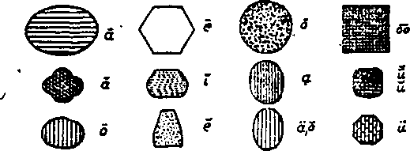

April 14.1920, VoLt Na IS fS9 PiiMOfced every o<Mr ’ ■Ml wee* at SS Ifrptte jltense, VJB yew rar*, y.r, a&x tffvnurii 9f
T«b Cwte * Copy—$LM • Tear Forelcn Sabscriptlaa Price $2.00
Volume 1 WEDNESDAY. APRIL 14.1»» Number 1*
CONTENTS o/ the GOLDEN AGE
• LABOR tad ECONOMICS
Capttnl Vahio Why Man Organic ,,, .463
and Standarda.. .......... 451 Something About a»f * ***
SOCIAL and EDUCATIONAL
Gifldran'o Part-Time Wort 453 Important New. Suppressed 435
CMld Training ...... . ..—454 Clerical Oppreaoora. ,,,.,455
FINANCE* COMMENCE. TRANSPORTATION
British EspendltoreA—-.457 British Financial
The British Debt__408 Remedies -_____'-
_ POLITICAL, DOMESTIC tan FOREIGN
British Empire Troubles—409 Rebirth of T-t-rta
Ragland ana America----400 What German
England and Ireland----401 Militarism
Country Ufa in Fann Bureaus
tfiaUmr Ago..... —488 aaa
. SCIENCE aad INVENTION
Arw There Dead Stare f_4 65 Curious AeddcntSL^—.tan
Trsaspareet yiaah., , ........485 Errata for Number 14-ZZ468
HOUSEWIFERY and HYGIENE .
■ KowoSwaa the TMK..467 Peruvian Ralntreea.
TRAVEL aad MISCELLANY
Xealtil of ChDdrea__469 Do Moviu Hut
pbSeeophF«Chiroprnctie 469 the
RELIGION sad PHILOSOPHY
The New Eden Juvenile Bible 8tudyMM_M.478
Fbrwlxadowed.—_____472 As Others Bae n«
. MANUFACTURING aad MIXING
SK£T9!®ffi2zZ2479 steady work ttr MlaenL_4T»
PebNsM «wr etber Wateoday st n Myrtle Aveng*. (Boro at Brooklyn) N« w fork, >4. Y., W WOODWORK®. BUDGING6 MARTIN CLAYTON J. WOODWOftTN ...... EdMw
‘
CoywtMn ad propriatarn. *idi1i»e' 81 Myrtle Avaer, (bore M ajomU>cU •'-» xat*. N. Y.
Tim Cists a Corr—8L0O a Tbs*.
Make rmnittaocea to The Golden Age< '
.•**•4 — aarvy at X. r..
SSTrtae.^ Z A xra, j>M*rSrwAMB
^*tau I N«w York, Wednesday, April 14, 1924 - Number LB
CAPITAL VALUE AND STANDARDS
By tt. B. BratieB
IT HAS been amply and forcefully demonstrated to world intelligence that a prime cause Of the high cost of living, social unrest and financial chaos everywhere existing is due to instability of prices in making domestic and foreign exchange of products; in other words, inability to define correctly the character and volume of value in units of commerce.
The only way possible of eliminating an effect is to remove its cause, in this case ignorance of values. When producer and consumer can correctly define the value of products they will demand just equivalents in making commercial exchanges, and an honest public sentiment will enforce their demands without confusion or without controversy.
Known and generally recognized facts will not admit of argument When world democracy and stable government have become automatic and self-adjusting, social unrest, militarism and financial chaos will disappear, and every child of man will have full opportunity to develop morally, physically and mentally to the limit of its natural ability.
Capital includes all units employed by society in social development and human uplift. Value is correctly defined and measured by stating the volume and character of social service rendered. Standards are natural agents by whose means we may correctly define the character and volume of all social units and thus remove them from the realms of controversy. Any part of a thing, large or small, is a unit of that thing and that unit never varies in character, composition and function. This is axiomatic.
•Though unrecognized and unnamed when Abel kept his flocks, units of time, electricity, heat, distance, etc., hours, watts, degrees, rods, etc., existed and functioned exactly as they do today, and will so continue through perpetual ages. The laws of nature never sleep.
Dollar is a term by which we define a unit of gravity containing twenty-five and eight-tenths grains weight (of gold). That unit of gravity always existed, always will exist and will never vary in function, will always define twenty-five and eight-tenths grains' weight and nothing else. We cannot define value in terms of weight.
A bushel of No. 1 wheat in the twelfth century, when it sold for about two cents, contained exactly the same number of gravity units, cubic units and nutritive units that it contains today, and always has and always will render exactly the same value or volume of social service—will never vary, but ever remain the same in composition, character, function and value.
Standards are natural products over which men and nations have no jurisdiction, no option in their selection and establishment. Nature established gravity, duration, space, altitude, longimetry, etc., as standards of weight, time, capacity, height, length, etc. Man had no choice in the matter whatever. A standard is identical in character with the nnits defined, with the units that compose its structure.
The law of standards defines a standard as the greatest possible or culminating unit of its kind and includes all units of its own character. Gravity includes all weight units, space all capacity units, duration all time units, etc. There is no exception to the law or rule. Hence the standard of values must include all units of value or all factors of commerce. An understanding of that law makes the location of a standard a simple matter. Name its greatest unit, and you have named the standard.
' . Space includes the universe and is the stand-■ ‘ ard of capacity and the greatest unit of capacK ity. Duration includes all units of time from seconds to eternity, and is the only possible standard of time. Gravity embraces all weight * units, altitude all height units, etc. Obedient to that law all social factors, all units of commerce from toothpicks, minerals, power-sites, etc., to the world’s greatest transportation systems are parts or units of the Standard of Value.
Labor is the world’s greatest unit of value and includes all other units of value combined. It is the greatest unit of' commerce and is the only possible standard, of value. As space is the architect of all capacity units, so is labor the. originator of all commercial units. The first intelligent step in any enterprise is to n determine correctly its labor cost or require-monts, and that cost or value is determined by the volume and character of labor required. There is no other way of determining values; and this fact is recognized and employed by all ** contractors of public and private enterprises.
Without space there can be no capacity; without duration there can be no time; without gr&v-ity there con be no height; without altitude there ean be no height; without dominating or unlimited units there can be no standards.
Without labor there can be no woodpulp, no ‘ musical composition, no books, no tools, no mat. chinery, no enterprise, no transportation, no E commerce, no business and no civilization,
p Labor, bought and sold, is the one unit of value
that comprehends and defines all units of value.
The value of any product is correctly defined by the volume and character of the labor employed in its creation.
As we define and measure heat, steam, light and electrical energies by their results, products or. units so can we define and measure labor energy by its results, products or units. A table of actual values and a national currency defining actual values in different denominations of units of value will eliminate social and financial stress forever from the affairs of men.
JFAg Mere Organize " By a. Poiccrman MR. Editor: I have been reading your articles regarding railroad wages and espe-• cially the communications in your number dated February 4. The most of what one reads about railroad wages in papers and magazines refers to the big brotherhoods. I wish to give you an idea of the condition that confronts other men in railway sendee. For thirty years I have been employed as clerk for a large railroad system and have finally worked up to the position of power-man; This position does not come under the head of any of the organizations, but before the government took over the roads was on the same par as train dispatchers and yardmasters. We were all getting $140 per month. When the organizations started their machinery for more pay, the yardmasters’ organization demanded $250 per month and got $225, but are expecting any time now that it will be made $250. We were not organized in any way, and were reduced to clerks, with an increase of $12.50 per month, instead of $85 to $110 per month increase. The pojnt I am trying to make is, Can you blame men for organizing f We made a protest, but did not even receive an answer, and are poorer than ever. -
HE following announcement is just off the press under current date in a letter to candy-makers:
“That our customers may receive the benefit of low wholesale prices and the privilege of buying sugar during the shortage of that product, we offer: '
Sugar__________________$9.65 per 100 lbs.
Pecans__________________$1 per lb. shelled.
These prices are subject to change without notice and to prior sale (pecans are expected to drop to 90 cents or lower at any time, and your order will be filled at the prevailing market price).—Service Department, Southern Candy Company, Confectionery Specialists, New Orleans, U. S. A."
It goes to show that something is crooked indeed when working people can hardly get sugar for table use at any price, and when available at all it comes in pound lots at double the wholesale price. This condition develops while the “wise men” quarrel for a year about how to run the rest of the world.
We long for the fulfillment of the promise that the worthies of the past—the prophets and wise ones of Israel—be made princes in all the earth. (Psalm 45:16) Nothing short of divine power can cope with the selfish elements of earth. Moses, Noah, Daniel, Job, Joseph and such like characters may be depended upon under divine direction to remove all dissatisfaction and bring in the desire of all nations. Thy kingdom come!
I —----•------------------------—.....- , ■ .... _________________
Children's Part-Time Work
WHILE they are still at school, in the morning, at noon and at night, on Saturdays and holidays and vacations, there are many little men and women that help to bear the expenses of the family by services rendered to others for pay, or by little businesses of their own which they run at a profit.
A kind pf business frequently undertaken by boys is the selling of papers. But these poor lads usually become victims of vice as a. result of their street experiences, and as the work requires their time in the early morning and late at night they , not infrequently become so fatigued that they cannot keep up with their school studies and become dwarfed in mind and body. It has been found by careful inquiry that during the summer months boys who have large paper businesses, requiring much time morning and night, can make more money in the same time if spent in gardening for profit.
Many children do odd laboring jobs for fees, and some even do heavy manual labor, including working on the road, teaming, ditching, cut-, ting wood, mowing lawns, washing automobiles, .sweeping, dusting and scrubbing offices, beating rugs, caring for furnaces, working around public buildings, barber shops, hairdressing, shoeshining, carrying grips, bellboy, waiter, caddy, delivery and messenger service. There is nothing in these occupations to commend them to schopl children, and they, are liable to start the children permanently in the wrong direction. Work as an office boy or office girl also provides few opportunities to observe business methods or to sectfre useful training in any way. The exceptions are few.
Other children accept positions in department stores at wrapping parcels, running errands and doing odd jobs; and when the offer of a permanent position comes, the opportunity to earn money and to get some of the things that money will buy, proves irresistible and they leave school. This work is not heavy, but the hours are long, the children are on their feet most of the time, and many girls experience serious foot trouble as a result of such work. The surroundings are not objectionable, however; and children so employed have many opportunities « to learn much about business affairs.
In cases where schoolgirls engage to assist in home duties, a large proportion of them are engaged in the care of younger children, an occupation very suitable to girls, and one in which most girls take pleasure. These girls usually have an abundant opportunity for recreation in the open air, and their activities offer good training facilities.
In cases where boys hire out to farmers, the hours of labor are sometimes long; but as a rule children are not overworked on the farm. Some of the work, such as hoeing and weeding, is fatiguing if persisted in many hours at a time; $
but much of the work is in the form of errands,
picking fruit, etc. The work is done in the fresh
air, the food is wholesome and in good supply,
over, the varied opportunities that are provided on a farm for an all-round development of the senses make a season on a farm a very desirable * part of every boy’s education.
For work undertaken on their own account, there is nothing so healthful and profitable for children during the summer months as a well- r kept garden. It is surprising how much money can be made in a season by a boy or a girl who is willing to work as hard at this work as would be necessary at other money-making occupations. Producers of food in the United States will be rendering a great service to humanity this coming season, provided economic conditions permit the foods produced to be properly distributed. The' census of 1910 showed that from 1900 to 1910 the agricultural products of the United States increased only 10% as compared with the preceding decade, while the population increased 21%.
If the Yangco’twins, now living in a children’s home in Brooklyn, ever take to gardening they will have to be careful of the plants. These poor children, natives of the Philippines, are joined together; one of them walks backward while the other walks forward. They were formerly on exhibition at Coney Island, but utre
ordered by a Manila court to be placed in custody where they could be better cared for. One of them recently had the influenza; the other was not ill but had to remain in bed until his brother recovered from the attack.
There will come a time, in the Golden Age, . when the Lord will separate these brothers. Will it not seem like heaven to them when they are able to run about like others! Miracleswill be common then. “Then the eyes of the blind shall be opened, and the ears of the deaf shall be unstopped. Then shall the lame man leap as ; an hart, and the tongue of the dumb sing.”— Isaiah 35:5, 6; 65:17 - 25.
Child Training
t training should begin about fifty
j years before birth and continue until the
'child has reached seventy years of age, by which j , time he will have learned the fundamentals of . how to live, unless he has been brought up in 1 . the atmosphere of certain ecclesiastical institu
tions and has remained in it, in which instance 1 the case may become hopeless.
I A mother who does not use her intelligence can make large progress toward ruining a child » within a very few weeks after its birth; she can do this by maidrig it perfectly clear to the child that he can get anything he wants by crying for it Later she can teach the child to lie by making promises which she does not keep and does ’ not intend to keep. Fathers can assist in this.
. They can also teach their children to swear, to be unclean in mind and body, to be evasive, 1 tricky, unprincipled and brutal. It is entirely natural for children to do what they see done by their fathers.
, Love for right principles and love for God as 1 the Author of all that is pure and lovely in creation is never inculcated in children by parents who do not love and practice those principles. < No child was ever beaten into godliness or a love of truth. The child should be appealed to through the power of reason and example; and the greatest of these is example.
The physical ability of a six-foot man to beat a boy of tender years does not imply that the man is fit to be a father. An ourang-outang ‘ might be able to give the father an even worse punishment than the father would dare give the boy, though sometimes these punishments , are. bad enough, and far worse than a decent anthropoid ape would think of using. A man who knows how to use only physical strength in disciplining his children is not much of a father. His children are to be pitied.
A New York justice sentenced, to not less than six months and not more than three years in the penitentiary, a father who beat a frail little- underfed boy .of nine years old with a leather trace because he did not hold the baby as ordered. One hundred and eleven cuts were found on this child's body. In the central part of New York state a clergyman beat a four-year-old child to death for refusing to say his prayers. What kind of God would one be that would wish a parent to beat a child to death for refusing to pray to Him! He would be worse than the parent himself. He would be like Moloch, the old-time eternal-torment deity.
Runaways from pleasant homes seldom occur. Most of the runaways occur from homes where the parents follow1 an old-established and evil custom of some priest-ridden European countries, of working children like slaves and insisting upon their handing over their pay envelopes unopened. When a child begins to earn money he begins to have certain rights to a portion of it that were not his before. Parents should respect these rights.
Following another ancient European custom, more than half of the states of,the union still give the fathers exclusive rights over their cliil-dren, control of education, religion and medical care, earnings, and the right to all property in case of death. Three states, Delaware, Florida and Tennessee, to their shame, even permit the father at his death to transfer his children from the mother’s care to that of other guardians. A_ more just and merciful arrangement, in effect in many states, is equal guardianship of the children as long as the parents live together, entire control to the surviving parent in case of the death of one of the parents, and in the case of separation or divorce the judge decides which parent is better fitted to have the children.
On account of the high cost of living fewer children of seven to twelve years of age are being adopted from the asylums than heretofore. A child of this age requires as great an outlay as an adult; and as he is unable to render aid to the family adopting him, he does not find as great a welcome in a new home as when prices were not so high. The demand for girls for adoption is far greater than the demand for boys. Pretty rough on the boys I
Important News Suppressed bv g. o. dhscoli MR. Editor: In a recent contribution for the columns of your paper, which you published under the caption “Russellism Will Not Down ’, in your issue of March 17th, I stated that Russellian! had thrived on persecution; and the following comments on the Rutherford Hippodrome meeting are for the purpose of giving you something further to think about.
The Russellites, now r> , n
under the leadership ^millions now living will never die of Judge Rutherford, . > .
their nresident Bp CTO n httfreafoctwa b tbeHIppa&aaNiMstSQBdayatarnAMftwillbacoachwniy prora ’ t by m&fly BibBcal propfeaaa which haua bwn MfiBad duinff tha pact fo* jw,
A WOrld campaign , aad from oMayatbarortiflbcouaaaaffuifilnMDL that biBdrab of thovaaadaaaw
New York Manifesto Unparalleled Religious Fervor
Approximately twelve to fifteen thousand people clamored for admittance to the Keto York Hippodrome Sunday afternoon, March 21st, to hear Judge Rutherford of the ATew York City Bar in hie world proclamation, “Millions Now Living Will Never Dtf*. The people were for him and the clergy against Mm.
Judge Rutherford
N«rt Soaduy, March ZlaL at ? o'clock h tha york HIPPODROME
Rutherford,
TALKING WITH THE MAD
with a new proclamation: “Millions Now Living Will Never Die”. In advertising * this meeting, full page announcements similar to the facsimile herewith submitted were used in many New York papers throughout the week preceding the lecture. These announcements contained the points to be proven, namely: That there are actually millions of people now living who will never die, but will re-main.and enjoy life as human beings upon earth forever; and that they will not see death. Further, that the foregoing would be proved by prophecies that were fulfilled during and since the world war; and that the proclamation should in no way be considered as a prophecy or as the opinion of an individual, but that it was and is the unanimous verdict of thousands of non-sectarian Bible students scattered throughout many countries, who base their conclusion upon fulfilled prophecy.
Judge Rutherford stated that the Hippodrome meeting was only an example of similar meetings which would be held in every large city of every country of the world for the purpose of making this a world-wide proclamation. He further made it plain that the clergy of all denominations, Protestant and Catholic, would bring their full influence to bear through every possible channel and by either fair or foul means keep the members of their congregations in ignorance upon these subjects and that their continued opposition should be expected by all
truth-seekers..
The Hippodrome was filled to its capacity of 5,500; and people, many of whom had come fromdistant cities, actually wept in front of the auditorium, crying in vain for admittance long after the doors were closed. The floral display on the stage, arranged by Mr. Pier-spn, president of the Cromwell Gardena of Cromwell, Conn., was a most beautiful symbol of incoming kingdom' conditions as pictured by the speaker when referring to world conditions at the close of the present great reconstruction epoch.
The speaker was very generously applauded as he stepped on 'the stage to . address his audience; and as he launched forth in the presentation of a mass of evidence proving the authenticity of his proclamation, “Millions now living will never die”, it was evident that he had caught the cordial spirit of his audience, and the following two hours witnessed the delivery of a remarkable proclamation equaled only by the profound and thoughtful manner in which it was received.
Judge Rutherford made it plain from the prophecies that the time would surely come when millions upon the earth would enter into a new epoch and would never need to die, and that the only question seemed to be as to whether that time is a dozen years distant or a hundred years distant or whether we are now living in the transition period. All his evidence was to prove that we are now living in that time.
The several tables for newspaper reporters were well tilled by representatives of New York papers busily reporting the address, and every facility was afforded them for reporting fully for the benefit of their readers, most of whom depend wholly upon the public press for information. Such reports were looked for, not only by those hearing the lecture and those unable to obtain admittance, but by hundreds of thousands of others who had seen the announcements and who were greatly surprised when on the following morning they found not even one line upon the subject in any of the metropolitan papers.
Strange as this may seem to the unsophisticated, it was nevertheless easy to all familiar with the persistent opposition of the clergy, to read between the lines that orders had gone forth from high ecclesiastical or interchurch authorities to •‘keep silence”. Pastor Russell predicted just such efforts to suppress the truth By igndring it, more than thirty years ago, in his Third Volume of Scripture Studies, from which I quote:
“Many of the rejected will realize the troubles coming, yet will still be blind to their real cause. They will say, Let- us unite ourselves and entrench ourselves in the strong cities (governments), and keep silence. They somehow realize that neither reason nor Scripture supports their, false doctrines, and that the wisest method is to keep silent, in the shadow of old superstitions and under the protection of so-called Christian governments. They orc represented aa saying very truly: ‘The Lord hath put ua to silence, and given us bitter poison-water to drinlr’. The only refreshment they may have is the cup which they have mixed (the poison of bitter error, the ‘doctrines of devils', mingled with the pure water of life, the truth of God's Word). Shall not such u are of Babylon, and who love her, and are therefore unready to obey the command, ‘Come out of her/ be forced to drink the cup of their'own mixing? Shall not such be forced to admit the falsity of their doctrines? They surely shall; and they will all be thoroughly nauseated, by it It seems that the prophet knew what he was saying when he said: ‘The wise men are ashamed, they are dismayed and taken: lo, they have rejected.the word of the Lord; and what wisdom is in them?'—Jeremiah 8:14, 9.
It is not for me to say, nor should it be necessary for me to do more now than to. simpjy by this letter call attention to the news-editors* treatment of the Rutherford meeting to prove this to be an additional evidence of ecclesiastical pressure and persecution; but, as previously stated, “Russellism has thrived on persecution” and will continue to do so. Yours in the interest of truth and a free press. .
Just God!—and these are they
Who minister at Thine altar, God of Right!
i Men who their hands with prayer and blessing lay On Israel’s Ark of light!
What! preach, and kidnap men?
Give thanks—and rob Thy own afflicted poor?
Talk of Thy glorious liberty, and then Bolt hard the captive’s door?
' What! servants of Thy own Merciful Son, who came to seek ’ The homeless and the outcast—fc The tasked and plundered slu
’ Pilate and Herod, friends!’
Chief priests and rulers, as of old, combine!
Just God and holy! that church, which lends Strength to the spoiler, Thine?
Paid hypocrites, who turn
Judgment aside, and rob the Holy Bock
Of those high words «f truth which search and burn In warning and rebuke;
Feed tat. ye locusts, feed !
, A.nd. in your tallied pulpits, thank the'Lord That. from the toiling workman’s* utter need, . Yc pile x^nr own full b'/ard.
Written in 1$3G. • Ward modiced.
CLERICAL OPPRESSORS
How long, O Lord ! how Ion;, ■ . Shall such a priesthood barter truth away, And, Id Thy name, for robbery and wrong
AC Thy own altars pray ?
Ts not Thy hand stretched forth Visibly In the henvens, to awe and smite? Shall aot the living God of all the earth,
And heavens above, do right ?
. Woe. then, to all who grind
and sure Their brethren of a common Father down!
tterlng down To all who plunder from the Immortal mind
ve! Its bright and glorious crown 1
Woe to the priesthood: woe
To those whose hire is with the price of blood—
Perverting, darkening, changing as they go,
The searching truths of God I
Their glory and their might
Shall perish; and their very names >hull be
Vile before all the people, in the light
Of a world’s liberty.
Oh • ppeed the moment on
When Wrong shall cease—and Liberty and Loro,
And Truth.’aod Right, throughout the earth be known As in their homes above.
JoM Creeel-jfi/ IFMtticr
_____________________TTie Golden Age for April 14, 1920 457
r+.-
'>
J1".
J 7 :
COLNTRY in which the whole man power and almost the whole woman power is em* J • ployed in war pursuits cannot instantly change ; from a war basis to a peace basis, but con* sidering all the difficulties it was done with reasonable dispatch in England. There were many critics of the government for delay in this work; there was even sharp criticism that in some directions the expenditures looking toward war were greater than during the war itself.
These critics pointed out that ten months after the armistice the government was still spending $24,000,000 per day, eight times the pre-war expenditure, or an amount double its income from all'sources; that one year after the armistice the government still had to borrow $55,000,000 every week in order to keep running; that $1,000,000,000 were paid out in * unemployment doles of $6 per week, to cover the j time between the soldier’s discharge and his return to work, which put a premium upon idleness and resulted in no benefits to anybody; that the expenditures every three months equaled the total pre-war national debt; that the deficit for the year, was double the amount fixed in the budget; that an eriormousnavy was still burning up the coal needed to keep the people warm; that an enormous army was still eating up taxes; that a huge army of clerks was still keeping army and navy records of no value to a country on a peace basis; that the cost of the government home spy system (secret service) was four times its cost in 1914; and that although, at the time the war ended, there were riot more than 1700 active airmen, yet a year i' after the war there were more than 14,000 officers in the Royal Air Force. Added to these criticisms is the fact not open to criticism that the annual cost for pensions is $500,000,000 and will he not less than that amount for many years to come.
In England they still believe in the principle enunciated by Thomas Jefferson, the founder of American democracy, when he said: “The spirit of resistance to government is so valuable upon certain occasions that I hope it may always be kept alive. It may often be exercised when wrong, but better so than not to be exercised at all.” Hence it was possible for the papers there to give expression to these criticisms, and the government gave close attention.
The government explained that it had done what it could to pay its bills as it went along; that £1,000,000,000 of foreign securities had been sold during the war to pay for war material; that one-fourth of Britain's total debt represented loans to allies and colonies and could be carried easily as the borrowers were maintaining interest payments; that great reductions in the sizes of army and navy were being made and that by the end of 1919 the army would consist of but 300,000 British troops and 100,000 Indian troops, and that it was believed no new taxation would be required in 1920 to balance revenues and expenditures. It pointed out that there were still held in England £3,000,-000,000 of the £4,000,000,000 that were held there before the war.
In the discussions it was brought out that the financial situation is very critical; that the great land owners have been compelled to sell off their estates because they are on the edge of bankruptcy ; that it had been necessary to defer the payment of interest on the $4,000,000,000 loaned to Britain by America; that men of incomes approximating $2000 per year are now paying income taxes of approximately $500 per year, and that, as Lloyd George expressed it, “Britain is borrowing herself to death”. The prospect of bankruptcy was freely discussed in the press, and in the House of Lords a noteworthy address contained the startling declaration that “behind bankruptcy, revolution treads with swift, impatient feet”—surely trouble enough.
British financiers protest that American financiers, while doing lip service to assist Europe, have been doing nothing but pile up profits, forgetting the principles of brotherhood so lavishly expressed while hostilities were in progress. They declare that the whole capitalist system is shaken, that capital is now international and that American capital itself is ‘•'already too heavily committed abroad to withstand a catastrophe with which the Russian debacle would he no more comparable than the Balkan wars with the great war’’.
BEFORE the war the British debt was , A . £645,000,000, or about $500 for each family
in the kingdom. This was bad enough, but see ‘ 5 what the war did.
L_1 , The war is estimated by the Carnegie Founda-
»,>,■•■•• tion to have cost the world $337,000,000,000. Railways were formerly constructed and sold at a good profit in America for $25,000 per mile. Reduced to railway mileage, the world ■ war cost as much as the construction of 13,-480,000 miles of these steel highways. The total area of the earth, water and land, is 196,940,000 square miles, or a plot 14,033 miles square. Such B'i a railway would cross that plot 960 times, in lines fourteen and one-half miles apart.
■ In other words, for the cost of the world war, i X ■ a railway could have been built around the earth in parallel lines so that no point on the earth’s surface would be more than seven and one--y •• fourth miles distant from a railway. But this assumes that the earth is all land surface. As C7 a matter of fact the land surface is only 52,000,-000 square miles, or a plot 7211 miles square. A railway 13,480,000 miles long would cross that plot 1870 times in lines 3.85 miles apart, so '/■ ' that no point on the land surface of the earth would be more than two miles from the railway. .. . It is not to be wondered at that the load which • has been created by this expenditure of the ac-■>’ ' cumulated wealth of mortals is staggering beyond the power of the mind to comprehend. By the end of March, 1919, the English debt was £7,430,000,000, and ran to larger figures during the balance of the year. This debt of now approximately £8,000,000,000 is at present equivalent to $4000 for each family in the kingdom. It is estimated at 44% of the national wealth.
Before the war the interest on the British debt was so great as to make a very considerable burden. Now the national debt is twelve times greater than it was, and the interest payable annually is a sum equal to one-half the total of the pre-war debt The debt is so great that some believe that it can neither be wiped out nor diminished through ordinary taxation. Not only did the war cost England 44% of its real wealth, , but it cost a tenth of its men, the principal source from which the wealth can be recreated. A financial writer says of the situation: “How , fascinating the whole scene would be to Gibbon were he alive in these most critical days of the British Empire F
FIVE interesting remedies have been suggested to help put England upon her feet:
(1) A member of the Parliament came forward with a proposition to take advantage of the gambling instinct lurking in almost every human being and organize on a grand scale a state lottery similar to that once maintained in Louisiana, and still maintained in Spain, and recently proposed for France. This would be a blow at British honor.
(2) Lord Rothermere suggested that Great Britain sell to the United States the Bermudas, the Bahamas, British Guiana and British Honduras in part payment of the loan advanced by the United States. This would be a blow at British pride, but defensible in an emergency.
(3) A writer in the London Journal of Finance and Trade urged that the vast holdings of the Church of England, supported by the whole population, but no longer believed in by the whole people, should be disestablished and every item of its property, even including Westminster Abbey, sold at auction and converted into cash for the relief of the debt-stricken country. This would be a blow at ecclesiasticism. It would not be a blow at Christianity, for “God dwelleth not in temples made with hands”.
(4) It has been proposed to levy such a tax on capital and war profits as to bring every man’s fortune down to the amount that he possessed at the beginning of the war. This subject is now receiving great attention. There are some who fear that these taxes would tend to frighten capital away from England and thus do irreparable mischief to trade and industry: and there are a good many British statesmen who have shared in these profits and would-not like to part with them. But it is estimated that such a tax would yield more than a billion pounds, and it is likely to be levied in due time. This would be a blow at selfishness.
(5) An exodus of several million of the population has been proposed, and under the spur of impending difficulties at home large numbers emigrated to Mexico in the latter part of 1919. This would be most regrettable, for England is one of the world’s bulwarks of liberty and progress. Nevertheless, such a migration might be to the ultimate benefit of civilization, much as we reason that the scattering of the early Christians by persecutions spread the tenets of the Christian faith more widely over the earth.
GENERAL SMUTS, president of the South African Union, one of the most active supporters of the Allied cause during the world r war, says that the British Empire is dead, hav-
' ing ceased to exist in August, 1914. This is
too strong a statement, although it cannot be denied that the authority of the empire over many of its component parts, Canada, South Africa and Australia, is much less than for-• merly, and that the situation in India is far from what the great colonizer of the world could desire it to be.
One of the prime policies of British statesmen is to keep the southern part of Asia, all the way from Siam to Palestine, from falling into the disorder which has so marked the northern portions of the great continent during the past year; and as India is at the center of this line, and fabulous in wealth and population, there is particular concern over outbreaks which have occurred and others which are threatened as a result of the spread of Soviet government throughout Central Asia right up to India’s back door in the northwest. ■
Among the troubles of the past year in India, out of which Britain emerged with more loss than gain, is that at Amritsar, in April, 1919. . According to statements made before the Senate Foreign Relations Committee, it appears that 6,000,000 natives of India died of starvation during the last three months of 1918, as a result of the great withdrawal of resources due to the European situation. It is estimated that during 1918 and 1919 the loss of life on this ground was 32,000,000 and that 150,000,000 ' more went hungry most of the time, endeavoring to maintain life by eating roots, leaves and kernels of old nuts, 15% of their gross earnings of $10 per year being required for the maintenance of the government.
This condition of things led to much unrest in various places; and among these was Amritsar, where two men named Satyapal and Kit-chiew were involved as leaders. These men were arrested and taken away from the city, whereat the populace retaliated by capturing the telegraph office, burning the town hall and a mission station, attacking a hospital and looting a bank. In quelling these disorders eleven natives were killed, and orders were issued forbidding within the city the assembly of more than four persons. During the uprising a doctor, Mise Sherwood, was attacked on a street.
Four days later the commanding general learned that in violation of his order a vast concourse of people was gathered in a sunken garden in a suburb listening to a lecture. The audience has been variously estimated at from 5,000 to several times that number. General Dyer proceeded to the place with a small company of British and native troops, stationed the soldiers in commanding positions and, without ordering the crowd to disperse, firdd into it 1,650 rounds of ammunition, killing between 400 and 500 unarmed natives, and wounding many others. Machine guns would have been used, so the general explained, but the door to the gardens was too narrow to admit of entrance.
The general explained before the parliamentary investigating committee that he thought he had done quite the right thing under the circumstances, though he admitted that martial law had not been extended to the suburb in question and that he had done nothing for the relief of the wounded after the shooting. It was brought out in the questioning that his superior officer, Michael O’Dwyer, Lieutenant-Governor of the Punjab, had afterward approved his course and promoted him to another command. Before leaving the stand General Dyer defended his policy of flogging the natives-also his order that any Indian passing through the street in which Miss Sherwood was attacked must crawl through on all fours. He admitted in his testimony that the crowd was unarmed, that it might have dispersed peaceably if he had ordered it to do so, but that he felt sure it would have laughed at him and returned later had he not acted as he did. It is not believed that the British Empire, as an empire, was helped in India by this occurrence or in England by its publication. The news filtered through to the United States in about nine months.
VERY once in a while somebody says something that would better be unthbught hud unsaid, and the result is many other people be* come irritated. On his recent visit to this country the Prince of Wales said at Winnipeg, "The ocean is of no good tb us if we do not rule it”. I That sounds all right to many people, but sounds
; very bad to a great many of the 106,819,000 that ' Eve in the United States and that wonder why । . the waters that-lave American shores and pos
sessions should be ruled by anybody. This idea * of wanting to boss everything and everybody is foreign to the true American spirit
f The Prince probably did not realize how his I statement would look to Americans when it appeared in their papers the next day. But I Janericans are ready to forgive a great deal from Englishmen; and when the Prince subse-
• quently visited New York he was cheered to the । echo by the 1,500 members of the New York . Chamber of Commerce when he gave expression to the mutual wishes of the good men of both nations that they might live amicably together. ’ It was the conception of millions of Ameri-4 cans that one great object of the world war Was
to rid the earth of military and naval terrorism, f and multitudes of thinking men are unable to j - see any reason now why either the British Empire or the United States should desire a very large navy when the only possible foe of either navy is the other. Great hostile navies are all ’ things of the past; German, Austrian and Russian naval power has been obliterated.
1 An Englishman who has been thinking on this 1 matter has suggested that the sensible thing for Great Britain and America to do is to combine their fleets, as it is hardly conceivable that the two countries would ever again war with one another. Such a combination would be able to dictate to the rest of the world limitations of naval armament, and would save billions of ’ dollars per year now thrown away on naval expenditures without helping the people.
It seems an opportune time to consider this , matter; for naval men are now balking of a . new and inconceivably expensive fighting ma-.chine which will combine in one machine the submarine, dreadnought and tank: will be able to fight either under the sea, on the surface or on the land, and be able ro crawl at will from one element to the other. The men who still have fl i eke rings of common sense had better dq something quickly to show it or the world will soon bb a plaefe where a child unsheathed in armor plate at the timfe of its birth will be likely to have its head blown off by a shell from, some Christian’s cannon before it has had time to take its first meal.
The Overseas Club and Patriotic League, soliciting membership among Britishers in America, announces in its printed matter that one of the objects it has in view is “to maintain our Empire’s supremacy upon the seas and in the air”. Probably few would go so far as to suggest what this implies, i. e., an effort to gain as full control over the air and-over air travel as British battleships have gained over ocean waves and over ocean commerce; but this implication does not have the right ring. It does not seem reasonable for a country of less than one-third of America’s population to spend ten times as much on air fleets as America spends, and to build those fleets with money borrowed from America, and then circulate in America literature implying a determination to control the earth’s atmosphere, as well as its seas.
It is only a little while ago that the InterAllied Maritime Council designated to America the use of the immense merchant ships Kaiserin Augusta Victoria, Prinz Friedrich Wilhelm, Mobile, Cape Finisterre, Pretoria, Zeppelin and Graf Waldersee, seized in German harbors after the armistice. Immediately after these ships had completed their work of bringing American soldiers back from Europe Britain demanded them; and although they were retained in New York for three months in the belief that they legitimately belonged to America, yet on the— order of the President of the United States they were finally surrendered to Britain’s demand. The surrender of these ships was greatly resented in France, which claims to have lost 295,000 tons from the French mercantile marine during the war, and which thought that if America was going to give up the ships to anybody France should have been the recipient.
The seven vessels foregoing were finally turned over to Britain to effect the release of twelve Standard Oil tankers also captured in German ports, and held by the British until the Kaiserin Augusta Victoria and companion boats were surrendered to the British crews in New York. The ships when obtained wore used to
bring back from India the Territorials, a body of troops too old for the trenches in France, who had been seht io India to take the plsee of the regulars there. These Territorials, many of them professional men, had been in India five years, instead of the year or two years they had expected to be there; and naturally they wanted to come home.
America makes the motion pictures for the world. The religious features of these films are under the control of Pope Benedict XV, and this in itself is objectionable to Britons. But during the war, to help out on the propaganda work, America was flooded with films showing Uncle Sam as Europe’s deliverer. These films are no longer salable here; and as Europe is the dumping ground for America’s unsalable films, they were sent abroad. One of these films, depicting an English Duke as the chief villain, was shown in London, whereat the audienco hissed both the American characters in the play and the American flag as well. We Anglo-Saxons are a curious family. We love one another, but we love the good old family fight best of all. How these Christians love one another I
On the other hand some American traders are offended at what they think has been an overly clever trick played upon them by British capitalists. With the quieting down of campaigns against Soviet Russia they discovered that British traders had for months been assembling goods at advantageous points about the Baltic, the Black Sea, and other points contiguous to the Russian border, prepared to skim the cream off the Russian market as soon as trade actually began. But Britain is of necessity a nation of traders, and it is hardly to be expected that what they have learned in centuries they will forget in an instant. British traders have always pushed to the farthest limits of civilization, and the country could not exist if this were not so.
WE SHOULD say ‘‘England, Ireland and
America"; for the Irish question is largely staged in America.
-\t this writing Hr. Eamonn de Valera is proceeding from city to city of the United States like a conquering hero, being freely offered the keys of the city everywhere. The statesmen of the United States know perfectly well that Mr. Valera and his friends are engaged at the agelong occupation of organizing another Irish revolution. In all the leading papers and in the street cars and elsewhere appear advertisements of the Irish bonds. So poor England has another trouble on hand in a year when troubles are thick enough for any one.
Those who ought to know say that there are more Irishmen in Ireland who do not want an Irish Republic, but who prefer British rule, than there are who do. They claim that the North of Ireland is a land of thriving industry, beautiful homes and contented, well-dressed people, while the South of Ireland is the reverse of all this. They claim that Ireland is not oppressed. They point out that England, Scotland and Wales have longed for years, and longed in vain, for land and housing measures such as have brought-great relief to the Irish people, and which were devised by Britain years ago in a futile effort to satisfy a group of ecclesiastical politicians who are never satisfied with anything short of full control of heaven and earth. It is said that Scotland with equal population pays five times aa much taxes into the British treasury as does Ireland.
As a result of the very special legislation enacted on their behalf the Irish tillers of the soil have been helped to buy 93% of all the lands they cultivate. This is a greater proportion than in any other country. Even in Germany, where special attention was given to the agrarian question, only 86% of the cultivated land was owned by the men who worked it. In most other countries it is much less. Only 12% of the small agriculturists in Great Britain own their lands.
WE ARE now witnessing the rebirth of many small nationalities that have been swallowed up, so to speak, for centuries, nevertheless preserving their peculiar identity of language, manners, and dress. The world is learning more about itself and discerning long-neglected members of the- great family of nations who are awakening from slumber, shaking off the shackles of kingcraft and priestcraft, ignorance and superstition. Among these is the nation of Latvia.
Until within the last few years who ever heard about such nationalities as Lithuania, Ukrainia. Esthonia and Latvia! Truly in their rise the valleys, the lowly and meek of society, are being
< t 1 i
1
*
i I
i
«
i 1 t
I
-1
462
-exalted; and at the same time the mountains and hills, the mighty warring nations of Germany, Austria and Russia, that surrounded them have been brought low.
Of the Lettish nation the great people o£ America know but little. If one presents himself as Lettish, the reply comes, "So you are a Russian T* This makes one smile. The difference between the two is as great as between the English and the German. Although the British and German people are both from Saxon stock, yet they differ widely; and although the Letts and Russians are both from Slavic stock, yet the lines of distinction are clearly drawn.
Washed by the gentle waves- of the Baltic from' the west and southwest, Latvia is surrounded by Esthonia on the north, Russia on the east and Lithuania on the south. Its area comprises the two former Russian provinces of Lavonia and Courland, and its population before th* war numbered about two million. Many colonies of sons and daughters are scattered in various parts of the world.
The geographical situation of Latvia made her a bone of contention for centuries in the wan between Sweden, Russia and Poland, until Peter the Great conquered all the Baltic coast and thus opened a window toward the west for Russia. The subjection to the Czars continued until November 11, 1918, when the Lettish council at Riga declared independence, and has maintained it ever since.
The country is especially favorable for agriculture and cattle raising, although rich deposits of minerals are found.
The Letts are industrious and intelligent people and have contributed their share to the art, science and literature of mankind, though long oppressed by the Czars and German barons, who have retained fully three-fourths of the land under their controL They have enjoyed measurable religious freedom, all the known sects of the other European countries being tolerated, which was not the case in Russia itself. This may account for the greater enlightenment of the people.
The Bible, the torch of civilization, liberty and progress, was brought in by German traders of the Lutheran faith in the early part of the seventeenth century.
The Letts are ardent lovers of their native soil, or, as they call it, "Izimteni”. They are a peace-loving, hospitable, hard-working, plainliving people and consequently live long; ages reaching up to one hundred years and over are not rare. The heavier the whips of the barons have lashed their helpless backs, driving them to work from sunrise to sunset, the greater has been the confidence of the Letts that a better day would some time dawn.
Unknowingly, they have been waiting for the dawning of the morning of joy, the morning of the Golden Age (Psalm 30:5), waiting for the long-promised "poor man’s chance”, waiting until the larger and more warlike nations that surround Latvia should cease to use her soil-; for a battleground and cease to transform her beautiful orchards and smiling wheat-fields into a desert of waste and want.
Now the rays of the long-expected Golden Age, dreamed by poets, and prophesied by wise men of old, have broken through the dismal gloom of night; and the poor war-stricken Latvia is struggling to lift herself from her knees, inspired with the hope that the day of reckoning has come, the day when God is pleased to help the poor and needy and to set the captives free.
Happy day for Latvia and many another long-stricken people! How we rejoice to see her free and happy, in the throng of other free nations, walking up the highway of holiness, up, up to perfection and everlasting life, Eberty and happiness, and to long enjoy every good and every perfect thing, above , all to know their God, by whose favor alone all their blessings have come, and in the smile of whose countexiance the obedient will find joys and pleasures for evermore.—Psalm 16: IL
What German Militarism Cost
OR the estimated cost of the world war the best of wagon roads could be built to every desired point on the land surface of the earth.
It is said that for an average expenditure of $30 per acre almost any desired reclamation project can be carried to completion. On this basis, the expenditure for the world war would reclaim 11,233,333,333 acres, or 17,552,083 square miles, which is more than one-third the total land area of the world. In other words, the sum wasted would have turned the earth into a paradise. Three cheers for war, humane, uplifting, ''spiritual’', glorious war, with all its opportunities to do good to all men I
Country Life in the Long Ago bv if. l. Pcite MANY, many years ago there lived in the little town of Bethlehem a man named Elimelech. His wife’s name was Naomi, and they had two sons, the older named Mahlon end the younger, Chilion. At this particular time, there was a famine in the land of Israel, and Elimelech decided to move with his family to Moab, where conditions were more prosperous.
Shortly after the change of residence, Elimelech died. Later the two sons married. The older son’s wife’s name was Orpah, and the younger son’s wife was named Ruth. They lived contentedly together for about ten years, when the grim reaper again entered the family household, taking away the two young husbands.
Hearing that conditions were prosperous again in the land of Israel, Naomi decided to return there. She made known her determination to her two daughters-in-law, Orpah and Ruth, both of whom decided to go with her.
The three started afoot on their long journey; for in those days there were no such things as railway trains, autos, or even a Ford. As they journeyed along, Naomi considered in her mind how much these two young women were giving up. She feared that, later on, they would regret having taken this course, when they would come into a land of strange people. Finally she presented the matter to them. ‘"Turn again, my daughters, go back to your people and your father’s house. It is too much for you to give up all hope of future prosperity in the land of Moab, just for my sake. I pray you, return."
Naomi loved Orpah and Ruth very dearly, and the two daughters-in-law loved her. But here is where the real test came: True love is willing to sacrifice. Orpah considered Naomi’s suggestion and came to the conclusion that it would be better to return. She loved Naomi, but she loved her father’s house and kindred more. And so the three lifted up their voices and wept; and Orpah, after kissing her motherin-law and Ruth, turned back to Moab.
Ruth, 011 the contrary, had true, tested love. She loved Naomi so much that she would not be separated from her at any cost. Listen to her words of devotion, some of the most beautiful in literature:
"Entreat me not to leave thee, or to return from following after thee: for whither thou goest, I will go; and where thou lodgest, I will lodge; thy people shall be my,people, and thy God, my God; where thou diest, I will die, and there will I be buried; the Lord do so to me, and more also, if ought but death part thee and me.”—Ruth 1:11-18.
Finally the two reached Bethlehem; and the people of the little town inquired, “Is this not Naomi!” (For she had been gone over ten years.) Naomi replied, “Call me no more Naomi [meaning pleasant] but call me Mara [or Mary, which means bitter], for my experiences have been bitter indeed”.
Not long after, about harvest time, Ruth went out to earn a living for herself and her motherin-law. She went to the Held of Boaz, a kinsman of Naomi. Now Boaz was a iach man and very generous-hearted. As he passed through his fields each day, he would say to his reapers: “The Lord be with you”, and they would reply, “The Lord bless thee". How different from present-day conditions! Boaz noticed Ruth working in the field; and after learning who she was, and of her love for Naomi, he requested her to glean with the other maidens in his field.
As time went on Boaz was more and more attracted by her gracious character and her strong personality. Finally the two were married: and to them was born a son whose name was Obed. He was the father of Jesse, who was the father of David. So Ruth became the great-grandmother of David, the man after God's own heart.
We believe that some of the conditionsthe land of Palestine in the days of Ruth and Boaz were like those that will obtain in the Golden Age, now dawning. Naomi and Ruth could journey all the way from Moab to Bethlehem, without fear of harm. So will it be in the Golden Age. “Nothing shall hurt nor destroy." Likewise Ruth could glean in the fields of Boaz, and have no fear of being harmed. There were no police in those days. . They were not needed. So likewise policemen will be unnecessary in the Golden Age. Nor will there be need of a standing army. “Nation shall not lift up sword against nation, neither shall they learn war anymore”.—Isaiah 2:4. • ''
Boaz was quite a remarkable man. He had ' no labor troubles. His workers did not demand i an eight-hour day. There were no strikes; lock-p outs were unknown; nor was there overtime - work demanded; nor did Boaz belong to a trust. K: Wall Street was unknown then. And likewise, p in the Golden Age, people will be contented. There will be no strikes, no lockouts, no labor troubles then. “Every man shall sit under his own vine and fig tree." (Micah 4:4) “They shall not labor in vain.” (Isaiah 65:21-23) The reason that people were all so contented then was because they worshiped the God of love. There were no'creeds, sects, or isms in-those days. And likewise in the Golden Aga men will worship the true God of love without creed-beclouded minds. “They shall serve him (God] with one consent”—Zephaniah 3 r 9; Isaiah 65:24; Micah 4:1-4.
GREAT federation of farmers all over the country is under way, the attempt being to
*' merge all farmers' organizations into one great . federation, as we comprehend the matter. The ' movement toward federation is alleged to have had its great stimulus in the inconsistent state-I meats issued by a great packing-house in Chi-, cago: first the statement, early in 1919, that t millions more of hogs would be needed; and sec-ij‘ ond the statement, six months later, that prices I' for hogs would be slashed to a point where there I could be no profit in raising them. It takes
f time and money to grow hogs; and these two
; statements, coming only six months apart, have awakened the farmers of the United States as f 1 nothing hitherto recorded has ever done.
J When the threatened reduction in hog prices occurred, the farmers followed the railroad workers, the shipbuilders, and workers in almost all other lines, and began to organize. They complained, with a great deal of justice, that the farmers have had to pay a large part of all the increased wages that have been granted in transportation and other lines, particularly in the manufacture of farm implements, and dedared their conviction that the only way to keep from being imposed upon by other social elements is to organize into a single large, well-lout organization. So doing, they hope to control the food supply and obtain fair prices, fair treatment and favorable legislation.
During the past winter the organization of the farmers has been going on apace. There are counties in the corn belt where every farmer in the county has joined. There are counties in Michigan where 85% of the farmers have joined and besides paying $10 cash for membership dues for the first year have given notes for two years’ additional dues. This is not a common movement; it is uncommon. It is developing with a suddenness and a strength unparalleled in our day. The farmers are aroused;
The farmers in this movement are clamoring not only for fair prices for themselves, but for fair prices to the ultimate consumer; and in this they show a spirit that is worthy of emulation. They believe that a fair wage should produce a fair living, and that nothing short of the elimination of profiteering will allay the unrest here and abroad, with its perplexity and distress.
A difficulty that the farmers’ bureaus are confronting is that in many places they have been organized under state auspices, the funds of the local treasuries coming partly from national appropriations, partly from state appropriations and partly from comity appropriations. The activities of the farm bureaus are therefore under a limited supervision of public officials, but the farmers are endeavoring to find a way to rectify this arrangement
The latest information available is that the plan in each county is to get a representative gathering of 300 farmers together, organize them, appoint a university man as county agent, the state paying one-half the agent's salary and the county the other half at the start; but as soou as the whole county is organized the bureau takes over the agent as its paid representative. _
The object of the fees charged, varying from $10 to $25 in various states, is to accumulate a large fund to carry on a campaign for the education of consumers in production and cooperation from the farmers' standpoint. The ultimate aim is to take over the stock yard and packing industries and flour mills, control the prices of cattle and wheat, and prevent the sudden depressions of the market which have been so disastrous to the farmer, while at the same time affording little or no real benefit to the consumer. The farmers are freely saying that they expect their movement to sweep the country like a tidal wave and to give certain financial interests a severe chill.
ON ONE occasion a dark spot at an immense distance from the earth partially eclipsed the star Sinns and gave rise to the theory that . here and there in the heavens are stars that have gone out. One argument in support of this theory is that the spectroscope indicates the-existence of dark bodies in the vicinity of other stars; and another argument is that in the milky way there are dark spots, called “coal sacks,” and supposed either to contain no suns or to be filled with suns that have ceased to give light. These dark spots can be seen at any time when the stars are clearly visible and when, there is no moonlight to dim their glory.
This theory suggests an age to the universe that gives food for reflection. AU of these stars, no matter what their age, are expressly declared in the Scriptures to have been made by our Lord Jesus Christ, himself the “first and - last” direct creation of God. Notice the way the Scriptures read. First they declare that he is Jehovah's “firstborn.” [brought forth] (Psalm 89:27), “the beginning of the creation of God”. (Revelation 3:14) Then they supplement this thought with the many-times repeated declaration that he was not only the first, but the only one thus directly created. On this point see Revelation 1:8,11,17; 2:8; 3:14; 21:6, and 22:13. The latter passage reads: “I am Alpha [first letter of the Greek alphabet—the first brought forth] and Omega [last letter of the alphabet—the last brought forth], the beginning and the end, the first and the last”. This is the tenor of them aU.
The Scriptures are no less explicit as to who j carried on the further works of creation, after the creation of our Lord Jesus, the Logos. They say of him: “In the beginning [of all creative activity] was the Logos [the official title of our Lord Jesus before he became a man], and the Logos was with the God [so the Greek language reads], and the Logos was a God [mighty one]. The same was in the beginning with the God. All things were made by him; and without him was not anything made that was made.” (John 1: 1-3) The Apostle Paul also der-lares that God “created all things by Jesus Christ " (Ephesians 3: 9) "for by him were all things created, that are in heaven, and that are in earth, visible and invisible, whether they be thrones, or dominions, or principalities, or powers” (Colossians 1:16) —"by whom also he made the worlds”. —Hebrews 1:2.
Our Lord Jesus is the personification of wisdom; and it is generaUy believed that there is a direct reference to him in the foUowing beautiful passage: “Jehovah possessed me [the Logos] in the beginning of his way, before his works of old. I was set up from everlasting [Hebrew, “age-lasting”—not eternity, but the far-distant past], from the beginning, or ever the earth was. When there were no depths, I was brought forth; when there were no fountains abounding with w-ater. Before the mountains "were settled, before the hills was I brought forth; while as yet he had not made the earth, nor the fields, nor the highest part of the dust of the -world. When he prepared the heavens, I was there; when he set a compass upon the face of the depth; when he established the clouds abbve: when he strengthened the fountains of the deep: when he gave to the sea his decree, that the waters should not pass his commandment : when he appointed the foundations of the earth: then I was by him, as one brought up with him: and I was daily his delight, rejoicing always before him.”—Proverbs 8:22 - 30.
The dead stars, if there are such, must be incomprehensibly old, or presumably would be so; and this thought agrees with the passage just quoted which implies that an almost infinite period of time has elapsed since the heavenly Father was alone in the universe. At that time nothing that we can see with the eye or with the telescope or discern by any other instrument or means had ever come into existence.
Transparent Flesh
MOST people in middle life can recall the excitement caused by the announcement that a Wurzburg scientist by the name of Roentgen had developed certain electrical rays, termed "X-rays”, by which it is possible to see through human flesh, leather, wood and other cellular mi bs lances. At first the reports were received with incredulity by many scientific men, and the leading electrical paper of the country came out
■with an editorial proving that such a thing is impossible. But we still have the X-ray with us—and the scientist.
Now comes the announcement that a French investigator, Dr. Jules H. Stean, has developed a fluid which, when applied to human flesh, accomplishes the same thing as the X-ray. As a drop of oil applied to a piece of paper may render it transparent, so the new X-ray fluid renders the flesh transparent, revealing all the veins, arteries and tissues. The degree of transparency can be regulated by the operator. The solution penetrates the skin and may be made to penetrate the flesh as far as desired. A board covered with the fluid is made as clear as glass, so that a newspaper can be read through it.
Referring to the discovery of the X-ray in 1896, Pastor Russell said:
‘"A lesson goes with this discovery which will not be generally recognized at first, and yet one that sooner or later is bound to influence many. For centuries, skeptics and infidels have been disposed to smile incredulously at the words of our Lord, ‘Enter into thy closet, and when thou hast shut thy door pray to thy Father which is in secret, and the Father who seeth, in secret shall reward thee openly’. (Matthew 6:6) Can these scientists any longer mock at Christians for ‘credulity’, because we believe that ‘all things are naked and open unto the eyes of him with whom we have to do’ ? (Hebrews 4:13) Surely human pride and positiveness may well be abashed by its own nineteenth century discoveries. ‘He that formed the ear shall he not hear? He that formed the eye shall he not see?’ And we begin to see how that other prediction can be fulfilled, largely in a ‘natural’ way—“There is nothing covered that shall not be revealed; and hid, tliat shall not be known*.
‘“Step backward only one century and you can sympathize with the infidelity which disputed and denied everything which it could not see and handle and comprehend; for men’s belief in unseen things and powers was in full accord with their experiences. But when God’s set time for ‘knowledge to he increased’, ‘the time of the end,’ had come, God began gradually to lift the curtain, and to show the world invisible things and to teach them faith in invisible powers, and ultimately through these lessons to see him 'ivho is invisible', with the eyes of their understanding.
“The telephone, by which men hundreds of miles apart may speak to each other through little boxes on their office walls, and recognize each others’ voices, tells us, suggestively, that God can hear infinitely better, and without the wires and batteries necessary to our service.
“‘The phonograph, recording our words and tones, preserving them ii needful for years, and repeating them
with their original emphasis and intonation, reminds us, suggestively, that similarly our brains are much more delicately constructed and con record not only words, but also thoughts and feelings, and classify these, and lay them away for future use, subject to the call of / memory. It gives us a hint, also, of how simple a matter it will be for God to resurrect the dead, by creating new bodies with brain* having similar convolutions to « the deceased which, thus revived by the breath of life, would reproduce beings which woulu reeogmze and iden- r tify themselves by the memory of their .past thoughts and experiences.
“Machinery and cars moved by the invisible Electric current of power are common everywhere today, though undreamed of fifty years ago. And through these w<j and all men have illustration of the invisible power cerine, . 1 ‘which holds all nature up,* and runs the vast machinery of the universe. ,
“These lessons to the child of God enforce-the salu- j tary thought that God hears the ‘groaning of the prisoners’ of sin and death, the prayers or the murmurs, the thanks or the-sighs of his children; that ‘Thou God i
seest me*; that ‘the eyes of the Lord are in every place •
beholding the evil and the good’; and that divine power, although invisible, is omnipotent and everywhere pres- , ent The same lessons will be valuable to the world by ! and by, when God’s kingdom shall shine forth and chase away the night-shades of sin and sorrow. But meantime the prince of darkness will no doubt continue to deceive many, and will use these wonderful signs of the ’ dawn of the Golden Age to support delusions and to oppose the truth. For instance, the natural man, not led by the spirit of God, will thereby be led, by the adversary, toward some oue of the manifold phases or Spiritism.”
THERE was a coin on the bridge. He got out of his friend’s automobile to pick it—up.
Around the turn came a motor truck; and in trying to escape he fell into the way and the rear wheels smashed his head and enabled the • family to realize on a $5000 insurance policy.
Look out for dreams near Chicago. Two men were riding when one dreamed that he was being robbed, drew a revolver and mortally wounded his companion.
AGE 420, fourth paragraph, ten years not five years; page 426. ninth paragraph.
1,000,000 cars, not 1,000,000,000; page 439, insert title, Color, Sound and Form; page 440, omit title Housewifery and Hygiene.
4&7 TRAVEL AND MISCELLANY ~| ~ ■■■■"——— — ,,,.J
CQLOR C. CHARACTERS
• ••■■SA
4W MMr Oaf to Mat
Chromo-Phono-Geometric Co-ordinates
NOT only is there a similitude existing between basic colors, basic sounds and basic forms, but the parallelism extends to the more complex tones and figures. The secondary and tertiary colors are merely modifications of some primary color, formed by the addition of another primary, or a secondary, as the case may be. If a tertiary color be modified into a tint or a shade by the addition of white or black, respectively, the product is a quaternary.
All of the secondary colors, some of the ter-tiaries and perhaps one quaternary (light brown) are identifiable in the realm of phonet-. ics. Between incomprehensibly rapid vibrations of white light and the absence of pulsation in dead black lies the gamut of lesser vibrations. The same remark applies to the domain of sound: between the high, piercing e and the point where vibration ceases to be perceived or, perhaps, ceases to exist. These delicate gradations are not so easy to trace in geometric forms. But our inability to trace them by no means disproves their existence. Nature makes use of fully as many figures as colors and sounds.
It will be noticed that of all the vowel combinations, those with the elements corresponding to red and yellow are the most frequent. Yellow is light; red is action. Apparently here in man's speech wo have another index of his disposition toward ambition and struggle. Members of the u group of vowels are much rarer, and in Japan's cherry-blossom-chrysanthemum language are almost entirely eliminated. This suggests a dearth of the coo), reflective faculties.
All of nature’s lavish contributions to our happiness through sight, hearing and touch are drawn from these omnipresent storehouses of color, sound and form. It is not too much to say that a complete understanding of all human history, grand and lowly, would be within our grasp had we the- sense to perceive and the judgment to arrange our perceptions in these fields. While all these colors, hues, shades and tints abound in nature they somehow manage to blend in pleasing harmony, which is more than can be said of many of our attempts at creation.
•'Flowers of nil hue are struggling Into glow Along the blooming fields, yet their street strife Melts into one harmonious concord."
—Schiller.
THE London Post reports that a miner working a seam of coal six hundred feet beneath tho ground struck a pocket of clay out of which rolled a live toad. We do not vouch for the truth of this story; but if it is not impossible (considering the hibernating powers of the toad) we might meditate upon its age in the language of the Photo-Drama of Creation:
“The appearance cf the sun and the moon on the fourth day implies that another ring (layer of watery vapor in the air) broke at that time and precipitat'd its great mass of water and mineral upon the earth. Great gullies were washed between the mountains. "The atmosphere, heavily charged with carbon, was very favorable to the development of plant life. It is supposed that the earth still had considerable heat in its crust, that oceans were warm and highly carboniferous, and that the air was surcharged with carbon to the extent that no breathing animal could have existed. But those very conditions were extremely favorable to gigantic growths of vegetation. This giant vegetation presumably passed into a condition resembling that of the prat-beds of our day. These beds of incipient coal afterwards fame under great pressure, as one after another the rings of earth came down in deluges, burying vegetation under .-limy deposits. Our coal fields are the result.”
We have reason for believing that the seventh day of creation is a period of 7,000 years, beginning promptly after the creation of father Adam in the fall of 4127 B. C. (according to the true Bible chronology) and ending in the termination of the Millennial age, about a thousand years hence. Reasoning thus, and noting that the toad was imprisoned toward the close of the fourth creative epoch or the beginning of the fifth, we calculate his age at 7,000 years each for the fifth and sixth epochs and 6048 years in the seventh— a total of 20,048, which is good age for a toad!
IN THE Valley of Ten Thousand Smokes, near
Mt Katmai, Alaska, are thousands of fumaroles,. or vents in the earth, from which issue steam so intensely superheated that a log of wood when held over it kindles as quickly as does a match when held over a gas flame.. When the fumaroles were first visited by the agents of the National Geographic Society none of the instruments carried with the party were able to measure the temperature. Special instruments were brought from the United States and the heat was found to be 1,192° Fahrenheit.
If these fumaroles were located in the temperate zone, near the sources of some raw materials used in the manufactures or arts, they would be inconceivably valuable. Nature has here accomplished in an almost inaccessible wilderness what has been proposed by the British Association for the Advancement of Science to be done somewhere in England, i. e., the boring of a shaft twelve miles deep, at a cost of $25,000,000 and eighty-five years time, to procure power direct from the earth’s heated interior in the shape of superheated steam.
■ Will the earth ever cool off so completely that it will become uninhabitable? Some scientists say that it will, but they do not take into account the Scriptures and the infinite resources of iho Creator. They are as far from the mark as many other unfortunates who have never noted the plain teachings of the Bible on this point. We quote the Scriptures for the benefit of some who have misunderstood certain symbolical statements in other portions of the dirine Word. It is strange that these Scriptures are not more generally known and believed.
“One generation passeth away, and another generation cometh: but the earth abideth forever.” (Ecclesiastes 1:4) “For thus saiih the Lord that created the heavens: God himself that formed the earth and made it; he hath established it, he created it net in vain, he formed it to lie inhabited.” (Isaiah 45:18) “The world also shall be ‘established that it shall not be moved.” (Psalm 96:10) “He built his sanctuary [his eternal and' incorruptible church in glory] like high palaces, like the earth which he hath established for ever.” (Psalm 78:69) “Who laid the foundations of the earth, that it should not be removed for ever.” (Psalm 1(M: 5) . We can but pity the unfortunates who refuse to believe the truth of these Scriptures, and whose minds become periodically heated like the fumaroles of Katmai with ideas of a coming destruction of the literal earth—ideas that are of even less value to mankind than the heated air rising in the Valley of Smokes.
TREE in Peru possesses the remarkable characteristic of drawing moisture from the surrounding atmosphere and depositing it in drops on the ground, at the rate of a gallon an hour. The trees can be planted in rainless deserts; and as soon as they reach a considerable size, the ground beneath them and in the immediate vicinity will become marshy because of the moisture they gather and distribute.
The segregations of moisture are particularly pronounced in the dry season, rivulets of water flowing away from the tree for a considerable distance. This feature is taken advantage of by the natives, although to a very limited degree. .If the waste places were systematically planted with these trees, vast areas which are now totally unproductive could be made to yield food for man and beast.
It is suggested that if these trees were planted at intervals of twenty-five yards apart they would provide all the moisture needed to raise crops in the unoccupied space. This tree grows rapidly and survives the greatest atmospheric fluctuations without injury. The foliage of the tree is remarkably luxuriant.
Possibly here is a means that may be used in desert regions in many places of the world to cause vegetation to bloom where now all is barren. It is a well-recognized fact that all vegetation draws rainfall to some extent, and it is possible that the general planting of these trees in a desort region would entirely alter the climate. In any event such changes are on the way and sure to corne in the Lord's own due time. When the Golden Age is in full swing there will ba no barrenness anywhere.
■ -■* ------------- - -- • ------ ~.~j—-• --‘
IT HAS been recently estimated that of the 22,500,000 school children in the United States 200,000 are markedly defective mentally, 250,000 have organic heart disease, 1,000,000 have or have had tuberculosis, 1,000,000 have defective hearing, 5,000,000 have defective sight, 4,500,000 are suffering from lack of food or of the right kinds of food, 4,000,000 have adenoids, 'enlarged tonsils or other gland troubles, and 12,000,000 have defective teeth. Not, over a quarter have good health. We are repeating these data because we think the people of this country ought to know the condition of the health of their children. No child can be the credit to his parents that he might be, if he does not have the Vigor and vitality of good health. He cannot make his way in the world as he should. He cannot bo the good citizen he would like to be. He must needs lack in neighborliness, in the social qualities. Since a community can rise no higher than its members, the subnormality of the people that the unhealthy children will grow up to be, bespeaks a low grade in the ideals and practices of the local community and the larger ones. Much depends on the health of those who are now children, but who will soon be the people of town and nation.
Philosophy of Chiropractic By h. l. Philbrick, d.c. IN THIS day of rapid increase of knowledge along all lines, it is but reasonable to expect that discoveries should be made which would enable mankind to relieve itself of some of its sufferings. To lie sure, many advancements have been made since the time of Hippocrates, the so-called father of medicine, who lived about 460 I?. C. Much has been done to alleviate the sufferings of hundreds of millions of people who have groaned and travailed under the weight of their pains. Yet in view of all that has been accomplished, much of the misery and the suffering continues. Is there not further relief?
Our question would be answered variously as it would in turn be presented to men schooled in the different health systems of our day. But there are certain facts which all must sooner or later recognize, regardless of whatever may be their present ideas.
The basis of our advancement in any given subject is our love for the truth, our willingness to stand squarely in front of facts and accept them when they are unmistakably proven. Surely no one today would sympathize with the scoffers of Robert Fulton, the inventor of the steamboat. We have found that when our telephone system is tied up for a few days because of a strike we are much perplexed. We have come to appreciate its great worth. Yet only a few years ago the telephone was in its infancy; it was almost unknown.
Thus we are reminded that in order to appreciate the worth of a thing, when it is brought to our attention we should have minds void of prejudice; for prejudice is but premature judgment on any subject. How easy it is to jump to conclusions before we have taken time to weigh all of the facts! In setting forth briefly the philosophy of Chiropractic it is done with the object in view of arousing interest in honest investigators that they may be enabled to see the logic of this health system and the part it plays in the alleviation of human ills.
Chiropractic (pronounced ki-ro-prak-tik) means literally to do by hand. The hands alone are used upon the body by the 'chiropractor to bring about the results that he is seeldng. How is this done? In this manner:
During the past centuries very little attention was given by scientists to the study of natural law until the study of the law of gravity. It was only in the seventeenth century that the circulation of the blood was discovered. Previous to that time, during the dark ages, people were led to think that a sort of “spirit” circulated in their arteries and veins.
The same is true with the structural framework of our body. Until recently we knew’ little of the relationship of our spine to our health. The large triangular-shaped bone at the base of the spine is called the sacrum. This, word moans sacred bone. The ancients thought that the seat of the soul was located in this bone.
Since the discovery of Chiropractic in 1S95 by Dr. D/D. Palmer, of Davenport. Iowa, the relationship of the spine to the remainder of the body has been rapidly brought to the attention of the people. The reason therefor is simply that certain facts have been accepted and acted upon and results have followed.
The spine is made up of twenty-four small bones called vertebrae, a sacrum and a coccyx. This bony framework encloses the delicate spinal cord. Between the vertebrae are little openings through which the nerves come out from the spiral cord and lead off to the various organs and tissues of the body. This is shown in the accompanying illustration of the spine.
This is in a way similar to a telephone cable, which contains the many wires that go out from the central office. The wires are all separate in the cable, yet they are placed in a very compact way within the lead casing. So it is with the spinal cord, which is a very wonderful system of human wires. Over these wires the nerve energy passes from the brain to the stomach, liver, kidneys and, in fact, to all of the minute tissues of the organism.
It can be readily seen that if nothing interrupts this flow of energy from the brain the health will be maintained until the organ dies from old age or from lack of restorative force. Exceptions are of course made where one is insufficiently fed and clothed, and deprived of a. reasonable amount of fresh air. If the nerve impulses are constantly passing from the great center of energy, the brain, the stomach will do its proper work and all of the other organs will functionate as they should. We know that up to a given time we do have health. How very easily our arms work when all is well! Little attention do we give to our bodies when health prevails; but when a pain is felt we begin to think of ridding ourselves of it, and in so doing we learn something about the intricate workings of the body, of which man knows so little.
When something happens to the telephone wire coming from the cable into our home, what occurs? We know how the phone scratches and grates; and we have difficulty in talking over it. If we happen to be in a hurry, the delay is quite a trial to our patience. What is wrong? Is there something wrong with the current? No; it may be that there is nothing wrong at the central office. The power may be flowing forth from the power plant as well as ever. But there is trouble with the wires. There may be what an electrician calls a "ground" or a loose connection somewhere; or perhaps the wire has been injured in some way. This interference with the current produces the trouble that - is manifest at the telephone.
Bringing the comparison back to the maintenance of our health we notice how it fits. The little bones in our spine get slightly out of place quite frequently—become subluxated, as illustrated by the few vertebrae with the nerves coming forth, one nerve being pinched by the bones.
It will be noticed that pressure upon a nerve is caused by a partial closing of the little openings between the vertebrae, having such effect upon the flow of the nerve current as pressure upon a rubber tube has upon the water flowing through it. What is the result ? The same as with the telephone when the wire is injured—the current is hindered. If a percent of the current is cut off on nerves going to the kidneys, would it seem reasonable that the kidneys could filter the impurities from the blood stream as well as with full nerve strength? Surely not; no more than we could have a properly working telephone with the current partially impaired.
If this is true with the kidneys, it logically follows that the same must be true ■with the heart, the pancreas, the intestines, etc. This simply means that there is a natural law governing the vital energy of the body. If Nature has the resource of energy in her power plant—the brain—and if nothing hinders the passage of that current to the life-producing organs, the body functions will continue.
Again, it may be asked: ‘How is it that our spines were made so weak that they get out of
order so easily! Would it not seem that our Creator lacked wisdom!’ To be sure these are but reasonable questions that arise in the thinking mind. However, the writer’s understanding of human history is that mankind is quite far from the perfect standard, and that life in its full is enjoyed by no human being at present This fullness of life is the glorious hope of the . ' better future of the Golden Age.
From the cradle to the grave the spine, being very flexible, is subject to many twists, strains, fails and various other injuries. Vocations which necessitate the assuming of a fixed position throughout the day cause the spine to assume an abnormal position. The result of all these misfortunes is displacement or subluxation of one or more vertebrae of the spinal col? umn. The injury may be insufficient to cause, a pain in the back; for the nerves supplying the muscles of the back may not be compressed by the injury, and pain anywhere is but the cry of an injured nerve. From the time the pressure takes place upon the nerve until disease mani-. fests itself, the process of the breaking down of tissues is taking place.
How often we are confronted with the fact that We are suffering from pain in some portion of the body. But the process was working before we discovered that we had pain. The disease is but the effect of an existing cause. Of necessity the cause must have existed before the effect was manifest, even as rain must be in the clouds before it can fall upon the earth, to water the fields and flowers.
Chiropractic is a science of dealing with the causb of disease, based upon these fundamental principles already set forth. At no time does the chiropractor seek to instruct nature how she should act if the energy flows through the • nerves. To enjoy the sun’s rays we remove the - blind from the window and let the warm rays do what they will to gladden our hearts and to give life to the plant in the window. If there is life enough in the plant it will revive and bloom again; if not it will die. So it is with the forces operating within our bodies.
The chiropractor examines carefully the spine to determine where the offending vertebra is located. (The chiropractic training has been to this end with scientific means for developing theory and technic.) After the cause has been found the offending vertebra is adjusted into its natural position by a sudden and skillful
-----------.....—.................
movement of the hands pushing the vertebra back into its place, so that it no longer presses the nerve. If the cause in the spine affected nerves which control the action of the stomach, when the pressure is removed the nerve energy will again return to those minute glands, and the secretions will again form properly. If the pressure be upon nerves affecting the kidneys, when the energy is again freed at the spine the great filters of the body will resume their important functions. The same is true with the muscles of the limbs, the movements of the eyes and the action of the heart.
When the skilled electrician seeks out, locates and corrects the cause of the faulty telephone we use the instrument again with a deep sense of satisfaction. No longer does it make annoying sounds, andwe talk over it with ease. The electrician simply repaired the defect that hindered the current from flowing readily. In other words, he placed the telephone in harmony with simple and well-known laws.
When the chiropractor has adjusted the vertebra and thus released the pressure from the nerves, the restorative powers are in nature’s possession. How little we possess in ourselves! We are gladdened by the harmonious working of nature’s forces within us. “Simple!" says some one. Indeed, all of the great laws of nature are simple when understood. Surely there must be a wonderful Author behind them all 1
Do Movies Hurt the Eyes
SOME people experience a certain amount of eye-strain at a motion picture; but according to the United States Public Health Service the trouble appears to be due to an ocular defect, rather than to the motion pictures. Such persons should have the eyes examined by a competent eye specialist; for it is quite certain that the same person would find even more discomfort in the same period of concentrated reading. The employes of motion picture establishments, who spend a large part of the day looking at the pictures, do not seem to be troubled with their eyes any more than other average individuals.
It is safe to say that a person may witness a picture play lasting an hour and a half without straining the eyes or experiencing any discomfort, provided that the eyes are good, and that there are no hidden defects of the vision. Indeed, a motion picture might be the means of advising a person of faulty eyes.
THE NEW EDEN FORESHADOWED
By Judge Rutherford.
: “.Ind lite- desolate land shall be tilled, whereas it lay desolate in the siyht of all that passed by. And they ■ shall say. This land that was desolate is become like the garden of Eden."—Ezekiel 38:3$, S3.
■ _ Kditoilm, Noth: Judge Rutherford visited the.Itn-periul Volley’with a view of notlug the steps the Lord la taking la causing the waste pluces to be glad and the desert to rejoice and Ukmsom os the rose. None who love their fellowmeu .can read liLt article without delight and joy of- iieart at the- grand evidence It pmenta of (lod’a purpose to ultimately hit the earth with peace and plenty. It Is a remarkable addition
: to the literature of Thu Colder Acs. -
OTHERS have written of Imperial Valley as a monument to the ingenuity and achievement of man. We shall here attempt to treat the subject from the viewpoint of fulfilled prophecy, showing another step in the majestic and progressive plan of God. Jehovah made the earth not to be destroyed, but for man’s habitation. (Isaiah 45:18; Ecclesiastes 1:4) He has promised to make the earth a place much to be desired, and his promise shall not fail, because he has said: “So shall my word be that goeth forth out of my mouth: it shall not return unto me void, but it shall accomplish that which I please, and it shall prosper in the thing whereto I sent it”. (Isaiah 55:11) All honor is due to the Lord for the transformation of this valley; for he located in their proper respective places the rivers, the mountains and the valleys, and irt his due time he will use them to his glory and for. the. blessing of all who love and obey him.
Imagine yourself standing upon the crest of a barren mountain looking to the eastward across a desert land to another mountain range a hundred miles away. The unusually rarified atmosphere makes your vision clear. Below you, some 4,000 feet or more, even below the level of the sea, a saucer-shaped. basin, approximately 100 miles wide, lies utterly desolate. The semi-tropical sun beats upon the pitiless waste of sand' which covers the surface of this basin, producing such a terrific heat that no vegetation save the gnarled mesquite and the scrubby greasewood brush can survive. The winds have whisked the sands into dunes, where the horned toad alone finds a habitation. No other creature can live in this barren waste. Even the coyote, ? as he approaches the valley’s edge, gites forth a howl of dismay, because his instinct tells him that there is nothing for him in ita wide expanse. It is.a land without word or song, a plaice of silence. Yet in symbol it speaks' to the weary ■ traveler, saying: This is a land.of thirst, without water to. cool your parched tongue or . lave your weary brow, without food, without, shelter, a land of silence, of desolation and death.
The weary traveler then changed his course and passed by this land of desolation; and as he went, mused thus: Why all this waste? Why did God make such a place of desolation? What profit and glory to him? What benefit to man? The answer is found only in the divine Word; and here the Lord makes plain his intention and purpose; and as these unfold to the student, his heart responds with gladness.
Twenty years later imagine yourself again standing on the crest of that selfsame mountain. An awesome sight greets your vision. Like a wiiite ribbon you see stretching from the mountain’s edge, out across this wide valley-, a modern concrete liighway, flanked on either side by lofty shade trees, waving their ’ green arms in the gentle zephyrs and clapping their hands together for joy. The meadow-lark, the linnet, the dove, and many other sweet warblers have come to join in the song of praise. No longer is it a land of silence, no longer a land of death. Herds of cattle, swine and sheep peacefully । feed in the fields ever green with life-nourishing < alfalfa; and the chickens, the ducks, the geese and the guinea hens, doing their bit to help enrich the inhabitant, join in the refrain with their peculiar sounds of happiness.
Thrilled with this entrancing scene, you speed in a modern Cadillac over the concrete1 highway, and shortly find yourself comfortably located i'n a modern, well-appointed hotel, in the very cc-nier of this valley where twenty years before not even the wandering coyote could exist. Now
you find in this hostelry hot and cold water, bath, and all things incident to a modem hotel. A concert is in progress in the spacious rotunda. Sweet strains of music arc wafted on the air where once silence and desolation reigned. Upon the table in your room you see a Bible, and from it you read the word written long ago by the prophets of God.
Call to mind now that more than 2,500 years ago these holy prophets had a vision of that above described—first a land of desert waste and desolation, and then a land transformed into an Edenic paradise. They had this vision, but they understood not Yet moved upon by the spirit of Jehovah they wrote: “The desolate land shall be tilled, whereas it lay desolate in the sight of all that passed by. And they shall say, This land that was desolate is become like the garden of Eden”: and “The desert shall rejoice and blossom as the rose; it shall blossom abundantly, and rejoice even with joy and singing. And the parched ground shall become a pool, . - and the thirsty land springs of water: in the wilderness shall waters break out, and streams in the desert. Then the eyes of the blind shall be opened, and the ears of the deaf shall be unstopped.’-—Ezekiel 36:34,35; Isaiah 35.
And now, dear reader, seeing the things thht have come to pass in your day, can you doubt that these prophets of old, under the supervision of. Jehovah. wrote of these great historic facts long before they occurred, and that now they are being fulfilled in God's due time, and that this is the time when the eyes of your understanding should be open, and that this is the time when man should begin to understand/ Can you doubt that the rapid transforming of Imperial Valley iparks the beginning of the fulfillment of divine prophecy and foreshadows further fulfillment on a far greater scale, and .that this is in harmony with and in furtherance of Jehovah's plan for the blessing of mankind? And seeing these things, ought they not to inspire in you a keener desire to make a careful, painstaking examination of the divine programme as recorded in Holy Writ! So doing, you will find that therein is recorded the panacea for all human ills: and as you find these things, would it not fill your heart with an eager desire to inform others of the .blessings that are coming to the human race?
Let the clergymen of earth take notice! We shall be pardoned for here humbly suggesting that these men of the cloth—men of influence and power, which can be used for great good —arc missing the greatest God-given opportunity ever offered to man when they fail to-teach the people the true meaning of the divine prophecies now in course of fulfillment Nearly half a century ago Pastor Bussell, the greatest modern interpreter of Scripture, began to teach, and continued to teach and to preach until his dying day, that we are in the time of the end of the old order; that the new order is coming in; that 1914 would mark the beginning of a world war; that within a short period thereafter restitution blessings would come to the people; and that the prophets foretold that these restitution blessings would consist of the reclamation of vast desert wastes and the blessing of all mankind with life, liberty and happiness. A few clergymen joined with him; but most of them, neglecting the great opportunity of representing the Lord, contented themselves either by following the old ctfurso of taking up collections and attending social functions, or else by joining in the persecution of that great BiHe scholar and those who did join with him in the proclamation of the divine program.
Events that have occurred in the last decade have proven beyond a doubt that the explanation of the Scriptures given by Pastor Bussell is correct'and true. All who are interested in the welfare of humankind will have a keen interest in the great transformation of the desert in Southern California, which we hold is but the beginning of the fulfillment of prophecy, foreshadowing greater events to happen for man’s welfare. ' People in general are comparatively ignorant of Imperial Valley’ and its history. This valley consists of approximately a million acres, half of which is now subject to irrigation and cultivation. In the year 1900 not a sprig Of grass grew upon it. But in less than twenty-years it has been transformed into the richest farming land of the world.
Located in the extreme southeastern corner of the State of California, the Imperial Valley, embraced in Imperial County, is bounded on the north by San Bernardino, and Biverside Counties, on the cast by the Colorado Biver, on the south by the Mexican state, Lower California, and on the west by San Diego County. It is 125 miles from San Diego to El Centro, county scat: 215 miles to Los Angeles. Much of its surface is below the sea level, some parts of it as much at 256 feet.
The tillers of the soil find some crop abundantly maturing practically every month of the year. For instance, January is the time for harvesting lettuce, and this year 4,000 carloads of lettuce were produced for the market. In February strawberries, asparagus and alfalfa hay are ready for the market. In fact, on an average seven crops of alfalfa hay per year are produced, or about eight tons per acre. The average price of this hay in the field is $20 per ton, making a total of approximately $160 per acre per year for the hay crop alone. Two j>r three crops of vegetables are produced on much of the land. In March peas are harvested, ■ in abundance. In April is the harvest of onions, squash, tomatoes, apricots and spring lambs. In May is the harvest of the wheat, barley and cantaloupes; in June, table grapes in abundance and many varieties; in July the cotton is matured and gathered in, while the grapefruit in abundance is harvested in November, hi the autumn months also are gathered dates in abundance, which for richness and sweetness are equal to any dates in the world. Honey sorghum is also produced in abundance, 'which ’ grows to a height of eleven feet, produces fortyseven tons per acre and sells at an average price of $10 per ton. Much of this is stored in silos for feeding stock throughout the year. Milo maize is another crop abundantly produced. Other crops in abundance are oranges, lemons, pears, figs, almonds, spinach, and many other farm products. In the year 1919,10,000 carloads of cantaloupes were marketed from this valley. With the coming of these wonderful products have come the bees in great numbers, and large quantities of honey are produced.
The valley is designated “The Creamery of Southern California”, its butter, milk and creamery production excelling that of any other county in California. It is verily a land- flowing with milk and honey. Grazing upon the broad alfalfa fields are great herds of cattle, sheep, swine, horses and mules. It has been found that the soil in Imperial Valley is so rich that it will never wear out. Holes have been bored to a depth of 900 feet, and at that depth the soil was found to be as rich as it is on top; thus proving that tins valley was once the bed of an inland sea which the silts coining down from the mountains for ages have filled in. Its natural agricultural riches are therefore inexhaustible. Yet the Lord permitted it to remain a barren waste for ages, until his due time to make it productive. The modem tractor, carrying the combination reaper, gathers in one crop and immediately prepares the ground for a second crop.
Some idea of the productive power of the land can be gathered when we learn that lands readily rent for $50 per acre per year. Our attention was called to the fact that in February, 1920, a Mr. Brooks rented to one W. S. Faucet 320 acres for five years at an annual rental of $50 per acre; in other words, $250 per acre for the use of the land for five years, which land twenty years ago was absolutely worthless. This is but a sample of the rental values of land. Without a doubt this valley within a decade, at the present rate of progress, could easily feed 5,000,000 people; whereas twenty years ago it produced not enough to keep alive even a jack rabbit. So rich is the soil that cottonwood trees three years old have grown nine inches in diameter and to a height of thirty feet or more.
The Imperial Valley produces the finest cotton in the world. The average yield of the short staple cotton is one bale per acre. A similar yield in quantity is obtained from the Durango or long staple cotton. The Pima variety of Egyptian cotton also produces about a bale per acre. The Goodyear Rubber Company, the Fisk Tire Company and other manufacturers of automobile tires, have found the long staple cotton grown in the Imperial Valley to be so superior to any other that they now make contracts with the cotton raisers guaranteeing to pay them not less than 60 cents per pound for all of the long staple cotton raised, and to pay more if the market price is higher. After the cotton crop is planted, these tire manufacturers advance to the farmer $25 per acre on his land, with which to raise and harvest his crop, and then pay him the market price when the crop is gathered, which must be not less than 60 cents per pound. The cotton is ginned at some of the fifty or more gins in the county; and the seed extracted from the cotton brings an average of $66 per ton.
Many will ask, How could such a great transformation of a bleak, barren desert to a rich, productive farming land take place within a period of twenty years? The truth concerning this is stranger than fiction: and the student of divine prophecy, learning of it, naturally calls to mind the words of our first text: “And the desolate land shall become tilled, whereas it lay desolate in the sight of all that passed by”.
In June, 1901, the first faint rivulet of water . was turned into a canal that had been prepared for the irrigation of the land. There is no other irrigation project in the world which excels that of the Imperial Valley. The water for this valley is taken from the Colorado River through a 750-foot reinforced concrete skimming gate, ' situated at a point on the California bank of the river five miles west of Yuma, Arizona. A canal or ditch was constructed from the point ■ named through the southern part of California and into Mexico, where reservoirs and distribution works were constructed near Calexico. The ——J waters then fed into Imperial Valley through irrigation ditches. There are thirteen different water companies that handle and distribute the water throughout the valley.
On the east side of the valley is a ditch known as the High Line Canal, and another as the Main Canal; and on the west side, one known as the West Side Main Canal. Branching from these main canals are a great number of smaller canals, through which the water is diverted and ' spread out over the farms. The average cost v to the farmer is about $3 or $4 per acre per - annum for the use of the water. In ordinary ' times the water in these canals is approximately six feet in depth. The canals are equipped with hydrochronometers, and the quantity of water passing through the main canals at a given point in ordinary times is 240 cubic feet per second; while, in what is known as the busy season, from April to September, approximately 500 cubic feet per second passes a given point in these canals. In addition to the richness of the soil, the water carries a heavy sediment, which is very fertile and supplies the land'with fresh fertilizer on the surface throughout the season.
Rains are not needed in this valley; in fact, the farmers prefer not to see any rain. The rain actually does their crops damage. The ’ irrigation system furnishes all the water necessary and produces crops far more abundant and satisfactory than lands fed by rains. .
If this desert waste could be so quickly transformed into an Eden, what will prevent the many millions of other desert lands throughout the world from becoming productive! Ways and means will be found to provide irrigation for all the deserts. Since we have reached the end of the old order of things and the beginning of the new, who will dare dispute the fact that the Imperial Valley of California is but an ex
ample of what the Lord will cause man to make of the deserts of earth within the next few years! Who will dare dispute that this is the beginning of the fulfillment of the Lord’s prophetic statement: “The desert shall rejoice and* blossom as the rose, . . . and rejoice even with joy and singing”! Verily, the Imperial Valley has become a place of song and rejoicing. Twenty years ago no song-bird was there heard. Now the trees are filled with warblers, while fowls and the beasts of the field give forth a joyful noise, and the peoples sing together for joy. Who will dare say that the Lord did not have this in mind when he caused the prophet to write: “The parched ground shall become a pool, and the thirsty land springs of water; and waters shall break out in the wilderness, and streams in the desert!**
The Menace—A Warning
Christ Jesus, discussing things that would occur at the present time, stated that the great world war would be followed by other troubles more severe, the like of which the world has never known. The trouble is not yet ended. The selfishness of man, looking with greedy mind and heart upon the prosperity of his fellow-creatures, may lead to other and greater troubles for the peoples of Imperial Valley as well as other parts of the earth. Most men give all credit to man for the reclamation of this desert, and utterly disregard the prophetic statement of Jehovah, not giving credit to him for the progressive steps in his great plan. Tn this they are encouraged by the clergy, who neglect or fail to teach the people the true meaning of the Scriptures, but with other men of the world become self-centered, austere and haughty. The Lord has stated that the haughtiness of all men shall be brought low, that Jehovah alone may be exalted.—Isaiah 2:11,12,17.
In looking over the Imperial Valley and the conditions surrounding, we can see a situation that menaces the prosperity of this beautiful land. Every Congressman who feels an interest in his fellow-creatures—and the presumption is that all do—should look well to the protection of the peoples of Imperial Valley and others who derive benefit therefrom. It will be observed that while the waters which feed this land are all taken from the United States, they are first conveyed into Mexico and then by canal from Mexico back into the United States, the reser-
voirs being situated in Mexico. Mexico does not feel kindly toward the United States; and besides; the United States has other enemies on the other side of the Pacific, who look with a greedy and selfish eve upon the prosperous fanner of Southern California. It is not at all unreasonable to suppose that these may arise and cause trouble with the United States and her people; and by cutting off the water supply from these canals, which comes in through Mexico, the entire valley could be ruined in a short while. To guard against this threatened menace it has been proposed that an All-American canal be constructed entirely on the American side, which could be done at an approximate cost of $30,000,000. We quote from the President of one of the banks of Imperial Valley, who said: “We are not asking Congress to appropriate one cent to build this new canal, but we are asking that the Government underwrite or guarantee the payment of the bonds until the second year after the construction of - the canal, at which time we have no doubt that the bonds will be easily disposed of at pur.” Thirty million dollars is a small expenditure for the protection of a million acres of fertile farm land such as is contained in Imperial Valley. The profits of one year would wipe out the debt thus contraeted.
. The Scriptures clearly indicate that there are .other troubles ahead, and we shall be pardoned for suggesting that it would be advisable to lose no time, but to put a large force of men to work and construct the all-American canal within a short time. This may not be done. The Lord may permit a disaster for a purpose, allowing the people to pass through some trying experiences in order that they may recognize that these blessings are not of men but of the Lord. And while ipan may be permitted for a tune to hinder and destroy, as soon as the Lord’s kingdom is in full charge this valley, as well as . many others, will blossom abundantly and rejoice with joy and singing.
The Reason
As we come to a knowledge of the dmne plan and its beneficent outworkings for mankind, we can fully see why the Lord has permitted this desert to lie desolate for centuries and to be reclaimed only in recent years. Wc can further see why, within a few years, all the desert lands of earth will be in process of reclamation. The ’ reason is this: Nineteen hundred years ago Jesus of Nazareth provided the redemptive price for the human race. Prior thereto, all the prophets from Samuel to John the Baptist had taught that times of restitution would come, in which mankind should be restored to the blessings of life, liberty, peace, abundance and happiness. At Pentecost the Apostle Peter said: “Times of refreshing shall come from the face of the Lord, for he will send Jesus Christ, whom the heavens must retain until the times of restitution of all things, which God hath spoken by the mouth of all his holy prophets since the world began”.—Acts 3:19 - 21.
As we have heretofore stated in these columns the old world, or social order of things, has ended, and the new order is beginning. Jehovah has already sent Jesus Christ, who is now present and who is directing the forces for the preparation bf the full establishment of his kingdom in -a short time. The wars, famine, pestilence, revolutions, discontent, distress of nations—all fulfilled in our day—are evidences of the time of the end, in which we are living. The reclamation of desert lands is but an example of what the Lord will do for the whole efirth; for, according to his prophet, he has said: “He hath formed the earth and made it, he hath established it; he created it not in vain, he formed it to be inhabited”. (Isaiah 45:18) He has promised to restore the desert waste places in order to make a fit habitation for man, and these times of refreshing are now due to begin. Another century will mark the most marvelous transformation of the earth and the blessing of the people that has ever been dreamed of. The earth will become a place of glory and beauty during the reign of the Messiah. Jehovah has promised: “The earth is my footstool, . . . and I will make the place bf my feet glorious’’.— Isaiah 66:1; 60:13.
Frequently words are used in the Scriptures in both a literal and a symbolic sense, and such is true in references to the desert or waste lands. The desert is a barren place upon the earth, devoid of food and water. Symbolically it pictures human society. Water is a symbol, of refreshing truth. In the deserts of the earth water is very hard to find. Applying these symbols to society, how aptly they fit the conditions existing in the present social order of tilings! Human society is indeed in a wilderness or desert condition; because in it is. found very little, if any, refreshing and quickening truth. For centuries such a condition has prevailed. The heat of trying experiences and blinding influences has beaten heavily upon the people, who have long sighed and moaned for relief, and still sigh in their distress.
St. Paul wrote: “The whole creation groaneth and travaileth in pain together until now, waiting for the manifestation of the sons of God”— the Messiah. (Romans 8:19,22) The phrase “sons of God” means the house of sons, of which Jesus is the head. During the gospel age the true followers of Jesus have been journeying through a desert or wilderness condition, but have found relief in Christ when they have cried unto him and followed his admonition. Thus the Psalmist puts it: “They wandered in the wilderness in a solitary way; they found no city to dwell in. Hungry and thirsty, their soul fainted in them. Then they cried unto the Lord in their trouble, and he delivered them out of their distresses. And he led them forth by the right way, that they might go to a city of habitation”.—Psalm 107:4-7.
The wilderness condition of mankind is due to the baneful influence of sin and death. It was Satan who involved the human race in sin, resulting in the whole social order being in a wilderness condition. “The whole world lieth in wickedness." (1 John 5:19) The condition prevailing at the present time, due largely to the fact that many who have had an opportunity to preach the truth have failed to do so, is graphically described thus: “Behold, the days come, saidi the Lord God, that I will send a famine in the land, not a famine of bread, nor a thirst for "water, but of hearing the words of.the Lord: and they shall wander from sea to sea, and from the north even to the east, they shall run to and fro to seek the word of the Lord, and shall not iind it”. (Amos 8:11,12) The relief for such a condition is to give the people the refreshing truths of the divine plan, showing them God’s provision for their blessing. The beginning of that glorious time is at hand! As we see the springs of water beginning to break forth in the literal desert, causing the earth to yield its abundance, so shortly we shall see the waters of truth increasing in volume among the people until its beneficial effects will make glad the hearts of all who love truth.
The process of irrigating the natural desert is by opening the gates leading from the main canal and permitting the water to pass through the smaller ditches and on to the land. A gate is a way or means used for letting in the water. Every Christian person who is now telling forth the message of Messiah’s kingdom is therefore a gate or an instrument for letting in the water to a famished population. We fully believe that The Golden Age magazine is one of the gates through which the water of truth is conveyed to the thirsty souls. Soon the Lord will use every willing one to carry the glad tidings to his fellow-creatures. The prophet of God in symbolic language graphically and beautifully describes the process of refreshing the people, thus: “He tumeth the wilderness into a standing water, and dry ground into watersprings. And there he maketh the hungry to dwell, that they may prepare a city [government] for habitation; and sow the fields, and plant vineyards, which may yield fruits of increase. He blesseth them also, so that they are multiplied greatly; and suffereth not their cattle to decrease.” (Psalm 107:35 -38) What a glorious prospect is just ahead for the groaning creation!
The productiveness of the desert land will be essential for the maintenance of the human family, because there are millions now on earth who will never die, and all who have died in the centuries past will be awakened out of death (John 5:29) and given.a fair trial for life (Acts 17:31); and the obedient ones will be restored to life and live forever on the earth. (Matthew 25:34; John 11:26) These teeming millions will require food and shelter and a place to reside; and when the earth yields its increase (Psalm G7:6) there will be abundant space and an abundance of nourishment for all who have ever lived arid will, again live. In fact, we stand today at the portals of the Golden Age. Just beyond the distress that is now upon mankind, by the eye of faith we see the incoming blessings. Why not relieve the people of their sorrow and distress by teaching them the truth concerning God’s wonderful arrangement! While Pastor Russell thus tried to teach, the clergy opposed and persecuted him; and while some others with him still seek to teach the people these great truths, many of the clergy are interesting themselves in trying to have prosc- utod and incarcerated in prison some of these humble teachers of the Bible.
Thanks be to God, however, that in a few years these blinded ones shall have their eyes opened (Isaiah 35:5), and then all the people shall begin to know the Lord, from the least even unto the greatest. Therefore we can confidently state'that notwithstanding the opposition to the truth at this time, its flood tide that is beginning will continue to rise higher and higher until it has filled the whole earth as the waters fill the deep. (Habakkuk 2:14) We invite our clergy brethren to cease their warfare and selfish course and join hands with us in the proclamation of Messiah’s kingdom, just now at hand. This kingdom, when established, will have a compulsory service law; and every man who would have a blessing will be compelled to do Messiah's bidding for the beautifying of the
earth and the helping of mankind. Every lover of the Lord and righteousness will voluntarily and joyfully respond to the command of the new King and participate in the blessed work of causing the desert to rejoice and blossom aS the rose. Imperial Valley is but a sample, indeed, in an embryo condition. The thousand-year reign of Christ will result in making the entire earth an Edenie paradise, and in this paradise of earth will the thief who died upon die cross and who cried to the Lord for help have his portion and his blessing because, of his faith in the Lord; and doubtless ho and all others will gladly perform the duties devolving upon them during Messiah’s reign. .
JUVENILE BIBLE STUDY
ONE question for each day Is provided.by this journal. The parent will find It Interesting and helpfBl to have the child take up the question each dny and to aid it in finding the answer In the Scriptures, thus developing a knowledge of the Bible ami learning where to find Ln It the information which is desired.
1. Why is Jesus coming again?
Answer: See Luke 12 : 36 - 42; Ephesians 1:10; 1 Corinthians 15: 25, 26; 2 Timothy 4:1; Acts 17:31.
2. iVtZZ Jesus ever die again?
Answer: See Romans 6:9; Revelation 1:18.
3. Will the earth ever be destroyed?
Answer: See Ecclesiastes 1:4; Isaiah 45:18; Psalm 119: 90; Numbers 14: 21.
4. Is all of God's work perfect?
Answer: See James 1:17; Deuteronomy 32:4;
Psalm 18:30.
5. Is the earth perfect now?
Answer: See Genesis 2:8, 9; 3:17, 18, 23, 24; Romans 8:22.
6. Will the curse which is note upon the earth be rolled away?
Answer: See Revelation 22: 3.
7. Will the whole earth become like the garden of Eden?
Answer: See Matthew 5:5; Ezekiel 36:33-36;
Isaiah 60:13; 66:1; Psalm 67:6; Micah 4:1-4;
8. When will the earth be perfected? ‘
Answer: See Acte 3:19-21; 15:13-18; Zephaniah 3:9; Ephesians 1:9, 10.
9. How did God rest from all of his work?
Answer: See Genesis 2:2; John 5:17; 1 Corinthians 15:24-28.
Answer: See 1 Corinthians 15: 45.
11. When was Adam created?
Answer: More than 6000 years ago.
12. How do we know this?
Answer: By studying Bible chronology.
13. Who created Adam? . ____
Answer: See Genesis 1:27; John 1:3; Colossiana 1:15-17.
14. Where was Adam's home?
Answer: See Genesis 2:8.
AS OTHERS SEE US
By ITartln Q. Chritteruo»
The poet Duma expressed the wish that we Could see ourselves as others see us.
But that wish has no advocate in me— The fates from that forever free us!
For then a thousand views
Would you and me confuse. And not a single one would be us!
I have In mind a better view,
More benefit to you and me,
Thun seeing ourselves as others see us:
If I saw me. ar.d you saw you. '
The way we are, just through and through— ▲ view that might from blunders free us I
The time Is coming with a mighty stride, When we shall see each other as we are. When e'en our thoughts no longer we can hide. Be they as white os snow or black aa tar; When shall we thus each other see?
The Bible tells It shall be
When Christ sets up his righteous government But for this time to ready be, . What can be done by you and me?
I think that we should start a movement— Let each elect a committee— Say, you choose you, and I choose mA For true and earnest self-improvement
Steady Work for Miners the first generation of miners began to give way
ANY idle industry assesses its loss upon its to a new generation of immigrants, Poles, Slo-■ employes, upon the owners and upon the va^ca an<i Italians, many of them brought in by publie. Idle plants and idle men are taxes upon the wealthy corporations to stabilize wages, L e., the community and upon the nation, taxes which— ^ower them. In 1900 the immigrants were Rus-must inevitably be paid. If the coal mines are sians, Bulgars, Rumanians, Syrians and Ar-idle part of the year the public must, in the long menians. The first generation understood the run, pay for the idle time of the miners and of English tongue and coal mining itself; the later
the mines, as well as for the days they work; for the living expenses of the miners and the constant overhead costs of the mine are necessarily added to the price of the coat
Bituminous mines are always idle for one-third to one-fourth of the time in ordinary ' years, because they are worked on the basis of the winter output In the year 1914 the soft coal workers1 operated the mines but 195 days, an average of three and three-fourths days per week. Even in the banner year, 1918, the miners lost sixty-one working days.
The situation is worse in some states than in others. Ohio is the worst; during the past five yean its soft coal mines have averaged but 176 days of work per year. In the same period the Indiana mines worked 196 days per year, the Illinois mines 205 days per year; the Alabama mines worked 252 days per year, the Virginia mines 258 day per year and the New Mexico mines 292 days per year.
Soft coal does not store any too well. When exposed to the weather it loses a considerable portion of its fuel value. But in Europe the mines operate steadily the year around; and those who have studied the matter feel that similar customs and practices should be inaugurated here. It is also believed that prices should be so adjusted here as to make it profitable for large buyers to buy during the time when then is normally little demand for coal. . Such an equalization of markets would give the miners steady work and be better for them, for the mines and for the public.
THE first workers in American mines were Americans or men from the British islps who wen familiar with the English tongue— English, Scotch, Welsh and Irish. About 1890 arrivals did not understand either of these.
The accident rates an much lower in England, Wales, France, .Belgium, Germany, Austria and Japan, because all the miners in one mine speak the same language. The polyglot workers in American mines an unable to understand the printed or spoken instructions, and do not have the experience in mining to enable them to understand the dangers apparent to those who have been brought up in the mines. The pioneers z have not stayed in the mines to work with the newcomers. This makes it bad all around. The standard of safety in the mine is the standard of the most ignorant miner or laborer. He may cause the accident that will endanger the lives of all the. rest, and experience has shown that this is what frequently occurs.
Very much has been done in the way of making the mines safer, by means of mine legislation and mining engineering; but many accidents happen due to those who know little of rock formation, fire damp, the properties of coal dust, the handling of explosives, and the liability of roofs to fall. Props are left unplaced, open lamps are used and explosives are handled recklessly. The result is mine horrors that make the heart sick. An offset is the growing use of rescue apparatus of a high degree of efficiency, oxygen-breathing devices that make rescues hitherto useless to attempt.
THE world’s deepest mine is the Morro Velho, in Brazil, the lowest working being 6400 feet vertically below the surface and 3650 feet below sea level. The ventilation is effected by exhaust fans, and a- $200,000 refrigeration plant insures that, no matter what the depth, the working temperature in the stopes shall never exceed 82°. The mine is absolutely dry.
The new book that tells the secret of the mysterious communications from the .unseen world—
Touches every phase of.these remarkable phenomena.
Lets the light of truth shine upon a theme hitherto shrouded in. gloom and darkness.-
. a
. Do you seek to ' know of your loved ones in death f con- r verse .with them ? see . them face to face T
Would you know . the exact truth about their condition?'
Then you cannot procure this book too quickly. It tells you clearly what the Bible teaches on this important subject. ■
No Other Book has Ever Been in Such Demand
250,000 copies on first edition alone. Everybody wants it because it contains detailed information not to be found in any other work.
4 M
■r J. ■ >

Ordeb Youb Copy Today.
Cabbiace Charges Prepaid.
SPECIAL LIMITED OFFER
The publishers of “Talking with .the ■ Dead” have completed a remarkable clubbing arrangement with your favorite magazine The Golden Age whereby /or the nest 00 day» BOTH publications may be had for the price of OtfB. This applies on new subscriptions only. .
Fill out the accompanying coupon and man to address below. *
' ORDER COUPON
Stark X In the proper epaca, cut out and mall with your address.
[ ] I enclose $1.50 ($2.00 for Canada or foreign}, for the book “Talking wits the DzAD^-fnd The Golden Age for one year, f ] I enclose 50c for a copy of the book “Talking with the Dead”.
Name...........— ................. ,
Address-, ■ ........——............
ADDRESS ALL ORDERS TO “ ’
International Bible Students Association, Brooklyn, N. T.
FleaM mention Tss Golds* Aga when anawerta< advertisers.
1